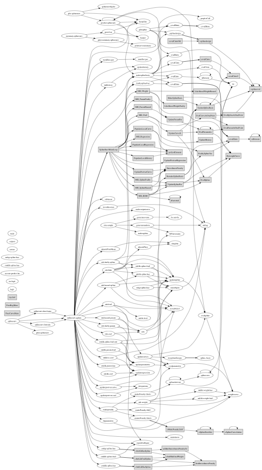

TABLE OF CONTENTS
- 1. /00main
- 2. /01structures
- 2.1. 01structures/CCurve
- 2.2. 01structures/CHistory
- 2.3. 01structures/CRegression
- 2.4. 01structures/RCurve
- 2.5. 01structures/RHistory
- 2.6. 01structures/RRegression
- 3. /initRoutine
- 3.1. initRoutine/CinitRoutine
- 3.1.1. CinitRoutine/addInitSmoothnessPenaltyGr
- 3.1.2. CinitRoutine/cInitGrHazSpline
- 3.1.3. CinitRoutine/cInitLikFrailSpline
- 3.1.4. CinitRoutine/cInitLikHazSpline
- 3.1.5. CinitRoutine/cInitMultAndWeight
- 3.1.6. CinitRoutine/cMakePenalty2diff
- 3.1.7. CinitRoutine/InitSmoothnessPenalty
- 3.2. initRoutine/fitparametric
- 3.3. initRoutine/inithistory
- 3.4. initRoutine/inverthessian
- 3.5. initRoutine/makeknots
- 3.6. initRoutine/makepenalty
- 3.7. initRoutine/makePenalty.2deriv
- 3.8. initRoutine/makePenalty.2diff
- 3.9. initRoutine/nknotsPriorMean
- 3.10. initRoutine/numHess.par
- 4. /RFitting
- 4.1. RFitting/curveUpdate
- 4.1.1. curveUpdate/evalparametric
- 4.1.2. curveUpdate/evalspline
- 4.1.3. curveUpdate/updatecurvex
- 4.1.4. curveUpdate/updatehistory
- 4.1.5. curveUpdate/updateparametric
- 4.1.6. curveUpdate/updateregression
- 4.1.7. curveUpdate/updatespline
- 4.1.8. curveUpdate/weightcurve
- 4.2. RFitting/CWrappers
- 4.2.1. CWrappers/cevalBinte
- 4.2.2. CWrappers/cevalCinte
- 4.2.3. CWrappers/cevalEinte
- 4.2.4. CWrappers/cmakePenalty.2deriv
- 4.2.5. CWrappers/cmkgr.spline.haz
- 4.2.6. CWrappers/cmklik.spline.frail
- 4.2.7. CWrappers/cmklik.spline.haz
- 4.2.8. CWrappers/csplinedesign
- 4.3. RFitting/makeLikelihood
- 4.3.1. makeLikelihood/mkgr.spline.haz
- 4.3.2. makeLikelihood/mkhess.coef
- 4.3.3. makeLikelihood/mklik.coef
- 4.3.4. makeLikelihood/mklik.frail
- 4.3.5. makeLikelihood/mklik.param.frail
- 4.3.6. makeLikelihood/mklik.param.haz
- 4.3.7. makeLikelihood/mklik.spline.frail
- 4.3.8. makeLikelihood/mklik.spline.frail.init
- 4.3.9. makeLikelihood/mklik.spline.haz
- 4.3.10. makeLikelihood/mklik.weight.frail
- 4.3.11. makeLikelihood/mklik.weight.haz
- 4.3.12. makeLikelihood/smoothpen
- 4.4. RFitting/MetropolisHastings
- 4.4.1. MetropolisHastings/acceptreject
- 4.4.2. MetropolisHastings/mh
- 4.4.3. MetropolisHastings/mh.bdm
- 4.4.4. MetropolisHastings/mh.coef
- 4.4.5. MetropolisHastings/mh.frail
- 4.4.6. MetropolisHastings/mh.frailty.param
- 4.4.7. MetropolisHastings/mh.frailty.spline
- 4.4.8. MetropolisHastings/mh.hazard.param
- 4.4.9. MetropolisHastings/mh.hazard.spline
- 4.4.10. MetropolisHastings/mh.weight
- 4.4.11. MetropolisHastings/updatepostvar.coef
- 4.4.12. MetropolisHastings/updatepostvar.curve
- 4.5. RFitting/miscUtils
- 4.5.1. miscUtils/accrate.predict.lm
- 4.5.2. miscUtils/haspar
- 4.5.3. miscUtils/hasspline
- 4.5.4. miscUtils/makeoutputcurve
- 4.5.5. miscUtils/mdiag
- 4.5.6. miscUtils/repairfrailtypar
- 4.5.7. miscUtils/submean
- 4.6. RFitting/splineUtils
- 4.6.1. splineUtils/evalBinte
- 4.6.2. splineUtils/evalCinte
- 4.6.3. splineUtils/evalEinte
- 4.6.4. splineUtils/frailtysplinefvar
- 4.6.5. splineUtils/ki
- 4.6.6. splineUtils/makesplinebasis
- 4.6.7. splineUtils/mysplineDesign
- 4.6.8. splineUtils/nBsmom
- 4.6.9. splineUtils/nknotsPrior
- 4.6.10. splineUtils/plotspline
- 4.6.11. splineUtils/splineconv
- 4.6.12. splineUtils/splinederivint
- 4.7. RFitting/ZZdebug
- 4.7.1. ZZdebug/rmkgr.spline.haz
- 4.7.2. ZZdebug/rmklik.spline.haz
- 5. /S3Methods
- 5.1. S3Methods/plot.splinesurv
- 5.2. S3Methods/post.fvar
- 5.3. S3Methods/predict.splinesurv
- 5.4. S3Methods/print.splinesurv
- 5.5. S3Methods/print.summary.splinesurv
- 5.6. S3Methods/printcurvesummary
- 5.7. S3Methods/splinesurv
- 5.8. S3Methods/splinesurv.data.frame
- 5.9. S3Methods/splinesurv.formula
- 5.10. S3Methods/splinesurvtkplot
- 5.11. S3Methods/summary.splinesurv
- 6. /simSurvival
- 6.1. simSurvival/bs.survfn
- 6.2. simSurvival/dnegbin
- 6.3. simSurvival/generateevents
- 6.4. simSurvival/generaterandom
- 6.5. simSurvival/makeagdata
- 6.6. simSurvival/MYmvrnorm
- 6.7. simSurvival/rinvgamma
- 6.8. simSurvival/sim.sample
/00main [ Modules ]
NAME
00main --- main fitting routines
FUNCTION
The splinesurv package contains utilities for nonparametric Bayesian analysis of clustered survival data. The baseline hazard function and frailty density are modeled using penalized B-splines. Options include adaptive knot selection and the inclusion of a parametric component.
The most important function is splinesurv.agdata, which does most of the model fitting. After initializing, the method either continues in R (if the option usec=TRUE is set), callling the various mh.* procedures, or calls SplineSurvMainLoop in the C compiled code, which does the same thing, only faster. The R implemented routines are thus primarily for debugging.
The call graph below is rather small and unhelpful. See a larger but equally unhelpful pdf version here: callgraph.pdf

USAGE
For usage instructions, see the R package documentation
AUTHOR
Emmanuel Sharef
/01structures [ Modules ]
NAME
01structures --- data structures used
FUNCTION
The R and C implementations of this routine use particular data structures to contain curves, regression information and estimation history, which are documented here
/initRoutine [ Modules ]
NAME
initRoutine --- Initialize the splinesurv routine
FUNCTION
Compute initial values for all parameters of interest and allocate the necessary storage
/RFitting [ Modules ]
NAME
RFitting --- model fitting routines in R
FUNCTION
Functions used to sample the MCMC chain from within R, without calling the C main loop. Some of these may make calls to C code occasionally, but the model- fitting on the whole is done in R. This gives the same results as C, but it's easier to debug and understand.
/S3Methods [ Modules ]
NAME
S3Methods --- Methods for S3 classes
FUNCTION
Define the handling for the splinesurv and splinesurv.summary classes.
/simSurvival [ Modules ]
NAME
simSurvival --- Simulate survival data
FUNCTION
Generate simulated clustered survival data with arbitrary baseline hazard and frailty distributions. The main user-visible function here is sim.sample, which calls other simulation routines
RFitting/curveUpdate [ Modules ]
[ Top ] [ RFitting ] [ Modules ]
NAME
curveUpdate --- Update B-spline curves
FUNCTION
Re-evaluate B-spline curves, usually with new parameters, different knots or component weights. The routines in R are relatively slow and easier to understand, the ones in C are designed to be faster.
RFitting/CWrappers [ Modules ]
[ Top ] [ RFitting ] [ Modules ]
NAME
CWrappers --- Wrappers for functions written in C
FUNCTION
Make it easy to call functions written in C from inside R
RFitting/makeLikelihood [ Modules ]
[ Top ] [ RFitting ] [ Modules ]
NAME
makeLikelihood --- Compute likelihoods of parameters
FUNCTION
Compute parameter likelihoods for use in Metropolis-Hastings steps
RFitting/MetropolisHastings [ Modules ]
[ Top ] [ RFitting ] [ Modules ]
NAME
MetropolisHastings --- MH and RJMCMC steps
FUNCTION
Execute each type of MH and Reversible-Jump step needed for the chain
RFitting/miscUtils [ Modules ]
[ Top ] [ RFitting ] [ Modules ]
NAME
miscUtils --- miscellaneous
FUNCTION
Miscellanous useful utilities
RFitting/splineUtils [ Modules ]
[ Top ] [ RFitting ] [ Modules ]
NAME
splineUtils --- Utilities for evaluating splines and related integrals
FUNCTION
Evaluate B-splines and integrals over B-splines, either in R or fast C code.
RFitting/ZZdebug [ Modules ]
[ Top ] [ RFitting ] [ Modules ]
NAME
ZZdebug --- debugging functions FUNCTIONS Functions whose sole purpose is debugging, that have not been removed from the codebase
00main/splinesurv.agdata [ Functions ]
[ Top ] [ 00main ] [ Functions ]
NAME
splinesurv.agdata --- main estimation function
FUNCTION
This is the main fitting function for the splinesurv routine. It accepts a data frame in a specified format, conducts the initialization procedure, then either starts the MCMC loop within R or calls compiled C code that does the same thing.
See also the call graph linked from 00main.
This function should not be called directly, instead the interface provided by splinesurv.formula should be used.
SYNOPSIS
4099 splinesurv.agdata <- function(x, hazard = NULL, frailty = NULL, regression = NULL, 4100 control = NULL, coda = FALSE, initial = NULL, verbose = 3, usec = TRUE, ...)
INPUTS
x a data frame with the following columns:
i cluster index
j subject index
time event time
delta event indicator
... covariates
See the package documentation for detail on the remaining options
OUTPUTS
an object of class splinesurv, see package documentation.
SOURCE
4103 { 4104 4105 if(verbose >= 1) cat("Initializing...\n") 4106 4107 agdata <- x 4108 rm(x) 4109 call <- match.call() 4110 m <- length(unique(agdata$i)) 4111 if(m == 1) warning("Single cluster: frailty density estimate is meaningless") 4112 Ji <- table(agdata$i) 4113 4114 if(verbose >= 2) cat("\tSetting initial parameters...\n") 4115 4116 # Parse input (control) 4117 control.in <- control 4118 # default control options 4119 control.default <- list( 4120 burnin = 500, # Length of the burn - in period 4121 maxiter = 1000, # Max number of iterations 4122 thin = 1, # Degree of thinning 4123 tun.auto = TRUE, # Auto - calibrate tuning parameters 4124 tun.int = 100 # Interval for calibration of the acceptance rate 4125 ) 4126 control <- control.default 4127 controlnames <- names(control) 4128 innames <- names(control.in) 4129 if(!is.null(control.in)){ 4130 # replace default control settings by any specified in input 4131 for(n in innames) eval(parse(text = paste("control$", 4132 match.arg(n, controlnames), " <- control.in$", n, sep = ""))) 4133 } 4134 if(control$burnin > control$maxiter) stop("Burnin cannot be greater than maxiter") 4135 4136 # Parse input (frailty) 4137 frailty.in <- frailty 4138 # default settings for frailty RCurve options 4139 frailty.default <- list( 4140 type = "spline", 4141 spline.ord = 4, 4142 spline.adaptive = TRUE, 4143 spline.knots = NULL, 4144 spline.knotspacing = "equal", 4145 spline.nknots = NULL, 4146 spline.nknots.prior = NULL, 4147 spline.nknots.hyper = NULL, 4148 spline.ncandknots = 100, 4149 spline.bdmconst=.4, 4150 spline.maxoccknots = 35, 4151 spline.maxknot = 5, 4152 spline.par = NULL, 4153 spline.min=-100, 4154 spline.penalty = "none", 4155 spline.penaltyfactor = 1, 4156 spline.meanpenalty = 1e10, 4157 spline.priorvar = 0.1, 4158 spline.hyper = c(0.01, 0.01), 4159 spline.tun = 1, 4160 spline.accept = 0, 4161 param.dist = "none", 4162 param.par = NULL, 4163 param.priorvar = 0.1, 4164 param.hyper = c(0.01, 0.01), 4165 param.tun = 1, 4166 param.accept = 0, 4167 weight = 0.5, 4168 weight.priorvar = 0.1, 4169 weight.hyper = c(1, 2), 4170 weight.tun = 0.01, 4171 weight.accept = 0, 4172 accept = 0 4173 ) 4174 frailty <- frailty.default 4175 frailtynames <- names(frailty) 4176 if(!is.null(frailty.in)){ 4177 # replace default frailty options by input 4178 for(n in names(frailty.in)) eval(parse(text = paste("frailty$", 4179 match.arg(n, frailtynames), " <- frailty.in$", n, sep = ""))) 4180 } 4181 # set additional RCurve settings 4182 frailty$type <- match.arg(frailty$type, c("spline", "parametric", "both")) 4183 frailty$hasspline <- frailty$type == "spline" | frailty$type == "both" 4184 frailty$haspar <- frailty$type == "parametric" | frailty$type == "both" 4185 frailty$spline.knotspacing <- match.arg(frailty$spline.knotspacing, c("equal")) 4186 frailty$spline.penalty <- match.arg(frailty$spline.penalty, 4187 c("2diff", "2deriv", "log2deriv", "none")) 4188 frailty$param.dist <- match.arg(frailty$param.dist, c("none", "gamma", "lognormal")) 4189 if(m == 1 & frailty$haspar) stop("parametric component not allowed for single cluster") 4190 if(frailty$haspar & frailty$param.dist == "none") { 4191 warning(paste("no distribution specified for frailty parametric component", 4192 "-- setting to gamma")) 4193 frailty$param.dist <- "gamma" 4194 } 4195 # match prior settings and set default hyperparameters 4196 frailty$spline.nknots.prior <- match.arg(frailty$spline.nknots.prior, 4197 c("poisson", "geometric", "poissonmix", "negbin", "power")) 4198 if(frailty$spline.nknots.prior == "poisson" & is.null(frailty$spline.nknots.hyper)) 4199 frailty$spline.nknots.hyper <- 10 4200 if(frailty$spline.nknots.prior == "geometric" & is.null(frailty$spline.nknots.hyper)) 4201 frailty$spline.nknots.hyper <- 0.1 4202 if(frailty$spline.nknots.prior == "poissonmix" & is.null(frailty$spline.nknots.hyper)) 4203 frailty$spline.nknots.hyper <- c(10, 30) 4204 if(frailty$spline.nknots.prior == "negbin" & is.null(frailty$spline.nknots.hyper)) 4205 frailty$spline.nknots.hyper <- c(2, .1) 4206 if(frailty$spline.nknots.prior == "power" & is.null(frailty$spline.nknots.hyper)) 4207 frailty$spline.nknots.hyper <- -1 / 2 4208 4209 frailty$spline.norm <- TRUE 4210 frailty$name <- "frailty" 4211 4212 # Parse input (hazard) 4213 hazard.in <- hazard 4214 # default hazard RCurve 4215 hazard.default <- list( 4216 type = "spline", 4217 spline.ord = 4, 4218 spline.adaptive = TRUE, 4219 spline.knotspacing = "mixed", 4220 spline.nknots = NULL, 4221 spline.nknots.prior = NULL, 4222 spline.nknots.hyper = NULL, 4223 spline.ncandknots = 100, 4224 spline.maxoccknots = 35, 4225 spline.bdmconst=.4, 4226 spline.knots = NULL, 4227 spline.par = NULL, 4228 spline.min=-100, 4229 spline.penalty = "none", 4230 spline.penaltyfactor = 1, 4231 spline.priorvar = 0.1, 4232 spline.hyper = c(0.01, 0.01), 4233 spline.tun = 1, 4234 spline.accept = 0, 4235 param.dist = "none", 4236 param.par = NULL, 4237 param.priorvar = 0.1, 4238 param.hyper = c(0.01, 0.01), 4239 param.tun = 1, 4240 param.accept = 0, 4241 weight = 0.5, 4242 weight.priorvar = 0.1, 4243 weight.hyper = c(1, 2), 4244 weight.tun = 0.01, 4245 weight.accept = 0 4246 ) 4247 hazard <- hazard.default 4248 haznames <- names(hazard) 4249 if(!is.null(hazard.in)){ 4250 for(n in names(hazard.in)) eval(parse(text = paste("hazard$", 4251 match.arg(n, haznames), " <- hazard.in$", n, sep = ""))) 4252 } 4253 # other hazard settings 4254 hazard$type <- match.arg(hazard$type, c("spline", "parametric", "both")) 4255 hazard$hasspline <- hazard$type == "spline" | hazard$type == "both" 4256 hazard$haspar <- hazard$type == "parametric" | hazard$type == "both" 4257 hazard$spline.knotspacing <- match.arg(hazard$spline.knotspacing, 4258 c("quantile", "equal", "mixed")) 4259 hazard$spline.penalty <- match.arg(hazard$spline.penalty, 4260 c("2diff", "2deriv", "log2deriv", "none")) 4261 hazard$param.dist <- match.arg(hazard$param.dist, 4262 c("none", "exponential", "weibull", "lognormal")) 4263 if(hazard$haspar & hazard$param.dist == "none") { 4264 warning(paste("no distribution specified for hazard parametric component", 4265 "-- setting to weibull")) 4266 hazard$param.dist <- "weibull" 4267 } 4268 # priors and hyperparameters for the number of knots 4269 hazard$spline.nknots.prior <- match.arg(hazard$spline.nknots.prior, 4270 c("poisson", "geometric", "poissonmix", "negbin", "power")) 4271 if(hazard$spline.nknots.prior == "poisson" & is.null(hazard$spline.nknots.hyper)) 4272 hazard$spline.nknots.hyper <- 10 4273 if(hazard$spline.nknots.prior == "geometric" & is.null(hazard$spline.nknots.hyper)) 4274 hazard$spline.nknots.hyper <- 0.1 4275 if(hazard$spline.nknots.prior == "poissonmix" & is.null(hazard$spline.nknots.hyper)) 4276 hazard$spline.nknots.hyper <- c(10, 30) 4277 if(hazard$spline.nknots.prior == "negbin" & is.null(hazard$spline.nknots.hyper)) 4278 hazard$spline.nknots.hyper <- c(2, .1) 4279 if(hazard$spline.nknots.prior == "power" & is.null(hazard$spline.nknots.hyper)) 4280 hazard$spline.nknots.hyper <- -1 / 2 4281 4282 # default weight settings 4283 if(!hazard$haspar) hazard$weight <- 1 4284 if(!hazard$hasspline) hazard$weight <- 0 4285 if(!frailty$haspar) frailty$weight <- 1 4286 if(!frailty$hasspline) frailty$weight <- 0 4287 4288 hazard$spline.norm <- FALSE 4289 hazard$name <- "hazard" 4290 hazard$x <- agdata$time 4291 4292 # Parse input (regression) 4293 reg.in <- regression 4294 reg.default <- list( 4295 priorvar = 0.1, 4296 hyper = c(0.01, 0.01), 4297 tun = 1, 4298 accept = 0 4299 ) 4300 regression <- reg.default 4301 regnames <- names(regression) 4302 if(!is.null(reg.in)) for(n in names(reg.in)) 4303 eval(parse(text = paste("regression$", match.arg(n, regnames), 4304 " <- reg.in$", n, sep = ""))) 4305 4306 # Default settings for the initial number of knots 4307 if(is.null(hazard$spline.nknots)) hazard$spline.nknots <- if(hazard$spline.adaptive) 4308 min(nknotsPriorMean(hazard), hazard$spline.maxoccknots) else 4309 max(min(round(sum(Ji) / 4), 35), 1) 4310 if(is.null(frailty$spline.nknots)) frailty$spline.nknots <- if(frailty$spline.adaptive) 4311 min(nknotsPriorMean(frailty), frailty$spline.maxoccknots) else 4312 max(1, min(round(m / 4), 35), 1) 4313 4314 4315 if(verbose >= 2) cat("\tFitting Cox survival models...\n") 4316 4317 # Cox fit with gamma frailties for initial values of Ui and beta 4318 varnames <- colnames(agdata)[ - (1:4)] 4319 qvarnames <- paste("`", varnames, "`", sep = "") 4320 if(m > 1){ 4321 coxfit <- coxph(as.formula(paste("Surv(time, delta)~", 4322 paste(qvarnames, collapse = " + "), " + frailty(i)")), data = agdata) 4323 Ui <- exp(coxfit$frail) 4324 if(var(Ui) < 1e-5) { 4325 Ui <- 2 * runif(length(Ui)) 4326 Ui <- 1 + (Ui - mean(Ui)) 4327 Ui[Ui < 0] <- 1 4328 } 4329 }else{ 4330 coxfit <- coxph(as.formula(paste("Surv(time, delta)~", 4331 paste(qvarnames, collapse = " + "))), data = agdata) 4332 Ui <- 1 4333 } 4334 # set initial frailies and regression structure 4335 frailty$x <- Ui 4336 beta <- coxfit$coef 4337 regression$m <- m 4338 regression$Ji <- Ji 4339 regression$covariates <- as.matrix(agdata[, -(1:4)], sum(Ji), length(beta)) 4340 regression$time <- agdata$time 4341 regression$status <- agdata$delta 4342 regression$cluster <- as.integer(agdata$i) 4343 regression <- updateregression(regression, beta) 4344 4345 rm(coxfit) 4346 4347 # Parametric fits 4348 if(verbose >= 2 & (frailty$haspar | hazard$haspar)) 4349 cat("\tFitting parametric components...\n") 4350 4351 hazard <- fitparametric(hazard, agdata) 4352 frailty <- fitparametric(frailty, Ui) 4353 4354 # Spline knots 4355 if(verbose >= 2 & (frailty$hasspline | hazard$hasspline)) 4356 cat("\tComputing spline knots...\n") 4357 4358 hazbounds <- range(agdata$time) + c(-.1, .1) * diff(range(agdata$time)) 4359 hazbounds[hazbounds < 0] <- 0 4360 hazard <- makeknots(hazard, agdata$time[agdata$delta == 1], bounds = hazbounds) 4361 frailty <- makeknots(frailty, Ui, bounds = c(0, max(max(Ui), min(2 * max(Ui), 4362 frailty$spline.maxknot)))) 4363 4364 # Evaluate the splines and integrals 4365 if(verbose >= 2 & (frailty$hasspline | hazard$hasspline)) 4366 cat("\tConstructing spline basis functions...\n") 4367 4368 hazard <- makesplinebasis(hazard, usec = usec) 4369 frailty <- makesplinebasis(frailty, usec = usec) 4370 4371 # Penalty matrices 4372 if(verbose >= 2 & (frailty$hasspline | hazard$hasspline)) 4373 cat("\tInitializing penalty matrices...\n") 4374 4375 hazard <- makepenalty(hazard, usec = usec) 4376 frailty <- makepenalty(frailty, usec = usec) 4377 4378 4379 if(verbose >= 2 & (frailty$hasspline | hazard$hasspline)) 4380 cat("\tObtaining initial values for spline parameters...\n") 4381 4382 {{{# Initial values for the theta vectors 4383 4384 if(hazard$haspar & hazard$hasspline){ 4385 oldhazweight <- hazard$weight 4386 hazard$weight <- 1; 4387 hazard <- weightcurve(hazard) 4388 } 4389 if(frailty$haspar & frailty$hasspline){ 4390 oldfrailweight <- frailty$weight 4391 frailty$weight <- 1; 4392 frailty <- weightcurve(frailty) 4393 } 4394 4395 # Initial values for hazard parameters 4396 if(hazard$hasspline){ 4397 theta.haz <- rep(0, hazard$spline.nknots + hazard$spline.ord) 4398 if(usec){ # use fast C code to compute likelihoods 4399 par <- as.double(theta.haz); status <- as.double(regression$status); 4400 lp <- as.double(regression$lp); frailrep <- as.double(rep(frailty$x, Ji)); 4401 hazParY <- as.double(if(hazard$haspar) hazard$param.y else rep(0, length(lp))); 4402 hazParYcum <- as.double(if(hazard$haspar) hazard$param.ycum else 4403 rep(0, length(lp))); 4404 weight <- hazard$weight; B <- as.double(hazard$spline.basis); 4405 C <- as.double(hazard$spline.basiscum); 4406 P <- as.double(hazard$spline.penaltyfactor * hazard$spline.penaltymatrix); 4407 penaltyType <- as.integer(pmatch(hazard$spline.penalty, 4408 c("none", "2diff", "2deriv", "log2deriv")) - 1); 4409 splinemin <- as.double(hazard$spline.min) 4410 sigma2 <- hazard$spline.priorvar 4411 sigma2 <- 100; sigma2target <- hazard$spline.priorvar 4412 #compute initial values by slowly decreasing the prior variance for stability 4413 while(sigma2 > sigma2target){ 4414 sigma2 <- as.double(sigma2 / 10) 4415 opt.theta.haz <- optim(par, fn = cmklik.spline.haz, gr = cmkgr.spline.haz, 4416 status = status, lp = lp, frailrep = frailrep, hazParY = hazParY, 4417 hazParYcum = hazParYcum, weight = weight, B = B, C = C, P = P, 4418 penaltyType = penaltyType, sigma2 = sigma2, min = splinemin, 4419 method = "BFGS", control = list(fnscale=-1)) 4420 par <- as.double(opt.theta.haz$par) 4421 } 4422 opt.theta.haz <- optim(par, fn = cmklik.spline.haz, gr = cmkgr.spline.haz, 4423 status = status, lp = lp, frailrep = frailrep, hazParY = hazParY, 4424 hazParYcum = hazParYcum, weight = weight, B = B, C = C, P = P, 4425 penaltyType = penaltyType, sigma2 = sigma2, min = splinemin, 4426 method = "BFGS", control = list(fnscale=-1, maxit = 1), hessian = TRUE) 4427 rm(par, status, lp, hazParY, hazParYcum, weight, B, C, P, penaltyType, 4428 splinemin, sigma2) 4429 gcout <- gc() 4430 }else{ # usec=FALSE 4431 hazard <- updatespline(hazard, theta.haz) 4432 gcout <- gc() 4433 sigma2 <- 100; sigma2target <- hazard$spline.priorvar 4434 #compute initial values by slowly decreasing the prior variance 4435 while(sigma2 > sigma2target){ 4436 sigma2 <- sigma2 / 10; 4437 hazard$spline.priorvar <- sigma2 4438 opt.theta.haz <- optim(hazard$spline.par, 4439 fn = mklik.spline.haz, 4440 gr = mkgr.spline.haz, 4441 method = "BFGS", 4442 control = list(fnscale=-1), 4443 hazard = hazard, 4444 frailty = frailty, 4445 regression = regression, 4446 hessian = FALSE) 4447 hazard <- updatespline(hazard, opt.theta.haz$par) 4448 } 4449 opt.theta.haz <- optim(hazard$spline.par, 4450 fn = mklik.spline.haz, 4451 gr = mkgr.spline.haz, 4452 method = "BFGS", 4453 control = list(fnscale=-1), 4454 hazard = hazard, 4455 frailty = frailty, 4456 regression = regression, 4457 hessian = TRUE) 4458 } 4459 gcout <- gc() 4460 hazard <- updatespline(hazard, opt.theta.haz$par) 4461 4462 } 4463 4464 # Initial values for frailty parameters 4465 if(frailty$hasspline){ 4466 frailty$spline.fixedind <- 1 4467 # parameter vector not including the fixed index 4468 theta.frail <- rep(0, frailty$spline.nknots + frailty$spline.ord - 1) 4469 { 4470 opt.theta.frail <- optim(theta.frail, 4471 fn = mklik.spline.frail.init, 4472 method = "BFGS", 4473 control = list(fnscale=-1), 4474 hazard = hazard, 4475 frailty = frailty, 4476 regression = regression, 4477 hessian = TRUE) 4478 } 4479 gcout <- gc() 4480 # add the fixed index back in 4481 theta.frail <- repairfrailtypar(opt.theta.frail$par, frailty$spline.fixedind) 4482 badtheta <- TRUE; j <- 0; 4483 # set the mean of the estimated frailty density to be exactly 1 4484 while(badtheta){ 4485 j <- j + 1 4486 thetaj <- suppressWarnings(log(-sum(frailty$spline.basisexp[ - j] * exp(theta.frail[ - j])) / frailty$spline.basisexp[j])) 4487 if(!is.nan(thetaj)) badtheta <- FALSE 4488 } 4489 theta.frail[j] <- thetaj; 4490 frailty <- updatespline(frailty, theta.frail) 4491 } 4492 4493 gcout <- gc() 4494 # reweight the inital curves 4495 if(hazard$hasspline & hazard$haspar){ 4496 hazard$weight <- oldhazweight 4497 hazard <- weightcurve(hazard); 4498 } 4499 if(frailty$hasspline & frailty$haspar){ 4500 frailty$weight <- oldfrailweight 4501 frailty <- weightcurve(frailty) 4502 } 4503 4504 gcout <- gc() 4505 # Evaluate variances and hessians for candidate generation 4506 frailty$tun <- diff(range(Ui))^2 / 6 4507 hess.coef <- mkhess.coef(regression$coefficients, hazard, frailty, regression) 4508 Sigma.coef <- solve(-hess.coef) 4509 regression$candcov <- Sigma.coef 4510 regression$cholcandcov <- chol(Sigma.coef, pivot = TRUE) 4511 if(hazard$hasspline){ 4512 hess.haz <- opt.theta.haz$hess 4513 Sigma.haz <- inverthessian(hess.haz) 4514 hazard$spline.candcov <- Sigma.haz 4515 hazard$spline.candsd <- rep(1, hazard$spline.maxoccknots + hazard$spline.ord) 4516 hazard$spline.cholcandcov <- chol(Sigma.haz, pivot = TRUE) 4517 rm(hess.haz, Sigma.haz) 4518 } 4519 if(frailty$hasspline){ 4520 hess.frail <- opt.theta.frail$hess 4521 Sigma.frail <- inverthessian(hess.frail) 4522 frailty$spline.candcov <- Sigma.frail 4523 frailty$spline.candsd <- rep(1, frailty$spline.maxoccknots + frailty$spline.ord) 4524 frailty$spline.cholcandcov <- chol(Sigma.frail, pivot = TRUE) 4525 rm(hess.frail, Sigma.frail) 4526 } 4527 # construct a numeric hessian for the parametric parameters 4528 if(hazard$haspar){ 4529 # (I don't remember why it doesn't just use numHess.par like for the frailty, but 4530 # there must be a reason for this inelegant setup) 4531 temphaz <- list(haspar = hazard$haspar, hasspline = hazard$hasspline, 4532 weight = hazard$weight, spline.y = hazard$spline.y, spline.ycum = hazard$spline.ycum, 4533 name = hazard$name, param.dist = hazard$param.dist, x = hazard$x, y = hazard$y, 4534 ycum = hazard$ycum, param.y = hazard$param.y, param.ycum = hazard$param.ycum, 4535 param.par = hazard$param.par, param.priorvar = hazard$param.priorvar) 4536 eps <- 1e-5 4537 par <- temphaz$param.par 4538 hess <- matrix(0, length(par), length(par)) 4539 for(i in 1:length(par)){ 4540 # this constructs numerical gradients by finite differences 4541 for(j in 1:length(par)){ 4542 par1 <- par;par2 <- par;par3 <- par; 4543 if(i == j) {par1[i] <- par[i] + eps;par2 <- par1;par3[i] <- par[i] + 2 * eps} 4544 else {par1[i] <- par[i] + eps; par2[j] <- par[j] + eps; par3 <- par1; 4545 par3[j] <- par[j] + eps} 4546 g1 <- (mklik.param.haz(par1, temphaz, frailty, regression) - 4547 mklik.param.haz(par, temphaz, frailty, regression)) / eps 4548 g2 <- (mklik.param.haz(par3, temphaz, frailty, regression) - 4549 mklik.param.haz(par2, temphaz, frailty, regression)) / eps 4550 hess[i, j] <- (g2 - g1) / eps 4551 } 4552 } 4553 Sigma.par.haz <- inverthessian(hess) 4554 hazard$param.candcov <- Sigma.par.haz 4555 hazard$param.cholcandcov <- chol(Sigma.par.haz, pivot = TRUE) 4556 rm(Sigma.par.haz, hess, temphaz) 4557 } 4558 if(frailty$haspar){ 4559 Sigma.par.frail <- inverthessian(numHess.par(frailty$param.par, mklik.param.frail, 4560 hazard = hazard, frailty = frailty, regression = regression)) 4561 frailty$param.candcov <- Sigma.par.frail 4562 frailty$param.cholcandcov <- chol(Sigma.par.frail, pivot = TRUE) 4563 rm(Sigma.par.frail) 4564 } 4565 4566 4567 }}} 4568 4569 if(frailty$hasspline) frailty$spline.fvar <- frailtysplinefvar(frailty) 4570 #browser() 4571 gcout <- gc() 4572 # Store initial values in parameter history 4573 history <- inithistory(hazard, frailty, regression, control) 4574 avg.tunhist <- NULL 4575 avg.accepthist <- NULL 4576 4577 4578 # an internal function to prepare the curve structures for calling the C code 4579 prepforCall <- function(curve){ 4580 if(curve$type == "parametric") return(curve) 4581 if(curve$spline.nknots < curve$spline.maxoccknots){ 4582 addcols <- curve$spline.maxoccknots - curve$spline.nknots 4583 curve$spline.knots <- c(curve$spline.knots, rep(-Inf, addcols)) 4584 curve$spline.par <- c(curve$spline.par, rep(-Inf, addcols)) 4585 curve$spline.candsd <- c(curve$spline.candsd, rep(-Inf, addcols)) 4586 curve$spline.basis <- cbind(curve$spline.basis, matrix(-Inf, 4587 dim(curve$spline.basis)[1], addcols)) 4588 curve$spline.basisint <- c(curve$spline.basisint, rep(-Inf, addcols)) 4589 if(curve$name == "hazard") curve$spline.basiscum <- cbind(curve$spline.basiscum, 4590 matrix(-Inf, dim(curve$spline.basiscum)[1], addcols)) 4591 if(curve$name == "frailty") curve$spline.basisexp <- c(curve$spline.basisexp, 4592 rep(-Inf, addcols)) 4593 } 4594 curve$spline.candocc <- attr(curve$spline.candknots, "occupied") 4595 return(curve) 4596 } 4597 if(usec){ 4598 hazard <- prepforCall(hazard) 4599 frailty <- prepforCall(frailty) 4600 } 4601 4602 # this does nothing, it just creates a useful marker 4603 main <- function() {} 4604 4605 if(verbose >= 1) cat("Starting MCMC...\n") 4606 4607 iter <- 1 # Counts the recorded iterations 4608 iter.el <- 0 # Counts elapsed iterations in each thinning cycle 4609 4610 if(verbose >= 3) cat(iter, " ") 4611 4612 4613 while(iter < control$maxiter) 4614 { 4615 if(usec){ 4616 # C version of the main loop 4617 gcout <- gc() 4618 nexttunint <- iter - iter%%control$tun.int + control$tun.int 4619 enditer <- min(nexttunint, control$maxiter) 4620 out <- .Call("SplineSurvMainLoop", hazard, frailty, regression, history, iter, 4621 enditer, control$thin, verbose) 4622 iter <- enditer 4623 }else{ 4624 4625 # R version of the main loop 4626 4627 iter.el <- iter.el + 1 4628 4629 if(verbose >= 4) cat(iter.el) 4630 4631 # MH update of frailties 4632 frailty <- mh.frail(hazard, frailty, regression) 4633 4634 # MH update of regression parameters 4635 regression <- mh.coef(hazard, frailty, regression) 4636 4637 # MH update of baseline parameters 4638 hazard <- mh.hazard.spline(hazard, frailty, regression) 4639 4640 # MH update of frailty density parameters 4641 frailty <- mh.frailty.spline(hazard, frailty, regression) 4642 4643 # MH update of parametric baseline parameters 4644 hazard <- mh.hazard.param(hazard, frailty, regression) 4645 4646 # MH update of parametric frailty parameters 4647 frailty <- mh.frailty.param(hazard, frailty, regression) 4648 4649 # MH update of weights 4650 hazard <- mh.weight("hazard", hazard, frailty, regression) 4651 frailty <- mh.weight("frailty", hazard, frailty, regression) 4652 4653 # Update of the sigmas / taus 4654 hazard <- updatepostvar.curve(hazard) 4655 frailty <- updatepostvar.curve(frailty) 4656 regression <- updatepostvar.coef(regression) 4657 4658 # Birth - death - move 4659 if(hazard$spline.adaptive) 4660 hazard <- mh.bdm("hazard", hazard, frailty, regression) 4661 if(frailty$spline.adaptive) 4662 frailty <- mh.bdm("frailty", hazard, frailty, regression) 4663 4664 # record history 4665 if(iter.el == control$thin){ 4666 iter <- iter + 1 4667 history <- updatehistory(history, iter, hazard, frailty, regression) 4668 iter.el <- 0 4669 if(verbose >= 3) cat(" ", iter, " ", sep = "") 4670 } 4671 } 4672 4673 {{{ # Periodic calibration check 4674 if(iter%%control$tun.int == 0 & iter < control$maxiter){ 4675 4676 if(verbose == 1 | verbose == 2) cat(iter, " ") 4677 4678 calinds <- (iter - control$tun.int + 1):iter 4679 4680 # Calibration of the tuning parameters for acceptance rate 4681 if(control$tun.auto & iter <= control$burnin){ 4682 if(verbose >= 3) cat("\n Calibration ...\n") 4683 4684 4685 tunnames <- c("regression$tun", 4686 "hazard$spline.tun", 4687 "frailty$spline.tun", 4688 "hazard$param.tun", 4689 "frailty$param.tun", 4690 "hazard$weight.tun", 4691 "frailty$weight.tun", 4692 "frailty$tun") 4693 alltun <- rep(0, length(tunnames)) 4694 for(i in 1:length(alltun)) eval(parse(text = paste("alltun[", i, "] <- ", 4695 tunnames[i]))) 4696 avg.tunhist <- rbind(avg.tunhist, alltun) 4697 avg.accepthist <- rbind(avg.accepthist, 4698 apply(history$accept[calinds, ], 2, mean)) 4699 for(g in 1:length(alltun)){ 4700 if(all(avg.accepthist[, g]>.25)) alltun[g] <- alltun[g] * 2 4701 if(all(avg.accepthist[, g]<.25)) alltun[g] <- alltun[g] / 2 4702 if(any(avg.accepthist[, g]>.25) & any(avg.accepthist[, g]<.25)){ 4703 # build linear regression model for tuning parameters 4704 fit <- lm(y~x, data.frame(x = avg.tunhist[, g], 4705 y = avg.accepthist[, g])) 4706 out <- try(max(1e-3, nlm(accrate.predict.lm, alltun[g], m = fit)$est)) 4707 if(inherits(out, "try-error")) 4708 alltun[g] <- avg.tunhist[which.min((avg.accepthist-.25)^2)] 4709 else 4710 alltun[g] <- out 4711 } 4712 } 4713 for(i in 1:length(alltun)) eval(parse(text = paste(tunnames[i], 4714 " <- alltun[", i, "]"))) 4715 4716 if(verbose >= 4){ 4717 outmat <- cbind(avg.accepthist, alltun); 4718 rownames(outmat) <- tunnames; 4719 colnames(outmat) <- c("acceptance", "tuning") 4720 print(outmat) 4721 } 4722 } 4723 # Print full iteration info 4724 if(verbose >= 5){ 4725 cat("Frailties: ", submean(history$frailty, calinds), "\n") 4726 cat("Coefficients: ", submean(history$coefficients, calinds), "\n") 4727 cat("Hazard.spline: ", submean(history$hazard.spline.par, calinds), "\n") 4728 cat("Frailty.spline: ", submean(history$frailty.spline.par, calinds), "\n") 4729 cat("Hazard.param: ", submean(history$hazard.param.par, calinds), "\n") 4730 cat("Frailty.param: ", submean(history$frailty.param.par, calinds), "\n") 4731 cat("Prior variances: ", submean(history$priorvar, calinds), "\n") 4732 } 4733 4734 #browser() 4735 4736 } 4737 }}} 4738 4739 } # end main loop 4740 4741 gcout <- gc() 4742 if(verbose > 0) cat("Done!\n") 4743 hazard <- makeoutputcurve(hazard) 4744 frailty <- makeoutputcurve(frailty) 4745 4746 gcout <- gc() 4747 {{{ # Construct output 4748 if(control$burnin < iter){ 4749 if(hasspline(frailty)){ 4750 frail.par.rs <- rowSums(exp(history$frailty.spline.par)) 4751 history$frailty.spline.par <- exp(history$frailty.spline.par) / frail.par.rs 4752 } 4753 sub <- (1:(iter)) > (control$burnin) 4754 posterior.mean <- list(coefficients = submean(history$coefficients, sub), 4755 frailty = submean(history$frailty, sub), 4756 hazard.spline.par = submean(history$hazard.spline.par, sub), 4757 hazard.param.par = submean(history$hazard.param.par, sub), 4758 hazard.weight = submean(history$hazard.weight, sub), 4759 frailty.spline.par = submean(history$frailty.spline.par, sub), 4760 frailty.param.par = submean(history$frailty.param.par, sub), 4761 frailty.weight = submean(history$frailty.weight, sub) 4762 ) 4763 # save mean number of knots in spline.nknots for output 4764 if(hasspline(hazard)) 4765 hazard$spline.nknots <- mean(apply(history$hazard.spline.knots[sub, ], 1, 4766 function(x) sum(x>-Inf))) - 2 * hazard$spline.ord 4767 if(hasspline(frailty)) { 4768 frailty$spline.nknots <- mean(apply(history$frailty.spline.knots[sub, ], 1, 4769 function(x) sum(x>-Inf))) - 2 * frailty$spline.ord 4770 history$frailty.spline.par <- log(history$frailty.spline.par) 4771 posterior.mean$frailty.spline.par <- log(posterior.mean$frailty.spline.par) 4772 } 4773 colnames(history$coefficients) <- varnames 4774 names(posterior.mean$coefficients) <- varnames 4775 }else{ 4776 postmean = NULL 4777 } 4778 if(coda){ 4779 # convert history to mcmc objects 4780 library(coda) 4781 for(i in 1:length(history)) history[[i]] <- as.mcmc(history[[i]]) 4782 } 4783 # clear history rownames 4784 rownames(history$frailty) <- rownames(history$coefficients) <- 4785 rownames(history$splinepar.haz) <- rownames(history$splinepar.frail) <- NULL 4786 control$iter <- iter 4787 }}} 4788 4789 gcout <- gc() 4790 # output object 4791 out <- list(call = call, history = history, posterior.mean = posterior.mean, 4792 hazard = hazard, frailty = frailty, control = control, data = agdata) 4793 class(out) <- "splinesurv" 4794 return(out) 4795 }
01structures/RCurve [ Definitions ]
[ Top ] [ 01structures ] [ Definitions ]
NAME
RCurve --- structure to store a curve in R
FUNCTION
This type of structure contains the information about a curve, either the hazard or frailty. This includes all parameters for spline and parametric components, weights, knot positions, etc, basis functions, tuning parameters, etc. It is the R analogue of the CCurve structure.
In R, this is implemented as a simple list. Most of the components are defined at initialization, others are added during the procedure.
The components are:
type "spline", "parametric" or "both"
hasspline boolean, whether a splien component is included
haspar boolean, whether a parametric component is included
name "hazard" or "frailty"
spline.ord order of the spline
spline.adaptive boolean, whether to use adaptive knot selection
spline.knotspacing "equal", "quantile", type of knot distribution
spline.nknots number of knots
spline.nknots.prior prior on the number of knots
spline.nknots.hyper hyperparameters for the number of knots
spline.ncandknots number of candidate knots
spline.candknots candidate knots
spline.maxoccknots maximum number of occupied candidate knots
spline.bdmconst constant for birth-death-move step
spline.knots vector of knots
spline.par spline parameters
spline.min minimum value of a spline parameter
spline.penalty type of smoothness penalty to use ("none","2diff","2deriv")
spline.penaltyfactor scaling of the penalty
spline.priorvar prior variance for the spline penalty
spline.hyper hyperparameters for the prior variance
spline.basis B-spline basis
spline.basisint integrals of each B-spline basis function
spline.basiscum cumulative integrals of each basis function (hazard only)
spline.basisexp expectation of each spline basis function (frailty only)
spline.candcov covariance matrix used to generate candidate parameter sets
spline.candcholcov cholesky factorization of spline.candcov
spline.fvar frailty variance (frailty only)
spline.fixedind index of the spline component that remains fixed (frailty only)
spline.tun tuning parameter for the spline parameters
spline.accept acceptance rate of spline parameters
param.dist parametric distribution type
param.par parameters for the distribution
param.priorvar prior variance for the parametric parameters
param.hyper hyperparameters for the variance
param.tun tuning parameter
param.accept acceptance rate of parametric parameters
weight weight of spline component
weight.priorvar variance of the weight
weight.hyper hyperparameters of the weight
weight.tun tuning parameter for the weight
weight.accept acceptance rate of the weight
x observations (times for hazard, frailties for frailty curve)
spline.y spline component evaluated at x
param.y parametric component evaluated at x
y both components weighted
spline.ycum cumulative hazard evaluated at x using spline component
param.ycum cumulative hazard evaluated at y using parametric component
ycum cumulative hazard
01structures/RHistory [ Definitions ]
[ Top ] [ 01structures ] [ Definitions ]
NAME
RHistory --- structure to store MCMC history in R
FUNCTION
This type of structure contains the state of the MCMC procedure at each iteration. It is the R analogue of the CHistory structure.
In R, this is implemented as a simple list. Most of the components are defined at initialization, others are added during the procedure. Each of the component has maxiter rows, and as many columns as needed to store the vector at each iteration. For spline parameters and knots, enough storage is allocated to store the maximum number of knots permitted by the adaptive selection procedure (if used). Unused storage is filled with -Inf.
See inithistory for the allocation procedure.
frailty frailty estimates for each cluster
coefficients regression coefficient estimates
hazard.spline.par hazard spline parameters
hazard.spline.knots hazard spline knots
frailty.spline.par frailty spline parameters
frailty.spline.knots frailty spline knots
frailty.spline.fvar frailty spline variance
hazard.param.par hazard parametric component parameters
frailty.param.par frailty parametric component parameters
hazard.weight hazard spline component weight
frailty.weight frailty spline component weight
priorvar matrix of prior variances
accept matrix of acceptance rates
01structures/RRegression [ Definitions ]
[ Top ] [ 01structures ] [ Definitions ]
NAME
RRegression --- structure to store regression information in R
FUNCTION
This type of structure contains the information about the regression components. It is the R analogue of the CRegression structure.
In R, this is implemented as a simple list. Most of the components are defined at initialization, others are added during the procedure.
The components are:
m number of clusters
Ji vector of cluster sizes
cluster cluster index for each subject
status vector of status indicators
covariates matrix of covariates for each subject
coefficients regression coefficient estimates
candcov covariance matrix for candidate generation
lp vector of linear predictors
priorvar prior variance of regression coefficients
hyper hyperparameters for prior variance
tun tuning parameters
accept most recent acceptance indicator
curveUpdate/evalparametric [ Functions ]
[ Top ] [ curveUpdate ] [ Functions ]
NAME
evalparametric --- evaluate the parametric component of a curve
FUNCTION
Evaluate the parametric component of a curve, either at all observations or at a single observation.
SYNOPSIS
1776 evalparametric <- function(curve, i = 0)
INPUTS
curve an RCurve structure i the index of the observation that should be evaluated (0=all)
OUTPUTS
curve the input curve, with x[i] reevaluated at curve$param.par
SOURCE
1779 { 1780 if(!curve$haspar) return(curve) 1781 if(i == 0) ind <- 1:length(curve$x) else ind <- i 1782 name <- curve$name 1783 dist <- curve$param.dist 1784 if(dist == "none") return(curve) 1785 # extract parameters and values at which to evaluate 1786 par <- curve$param.par 1787 x <- curve$x[ind] 1788 if(name == "hazard"){ 1789 if(dist == "exponential"){ 1790 # exponential components are parametrized by their log-baseline 1791 lambda <- exp(par) 1792 y <- rep(lambda, length(x)) 1793 ycum <- x * lambda 1794 } 1795 if(dist == "weibull"){ 1796 # weibull components are parametrized by their log-baseline and log-scale 1797 lambda <- exp(par[1]) 1798 alpha <- exp(par[2]) 1799 y <- alpha * lambda * x^(alpha - 1) 1800 ycum <- lambda * x^alpha 1801 } 1802 if(dist == "lognormal") 1803 stop("lognormal distribution currently not fully supported") 1804 } 1805 if(name == "frailty"){ 1806 ycum <- NULL 1807 if(dist == "gamma"){ 1808 # gamma components are parametrized by minus their log-shape 1809 alpha <- exp(-par) 1810 y <- dgamma(x, shape = alpha, rate = alpha) 1811 } 1812 if(dist == "lognormal"){ 1813 # lognormal components are parametrized by their log-variance 1814 alpha <- exp(par) 1815 y <- exp(-(log(x) + alpha / 2)^2 / (2 * alpha)) / (x * sqrt(2 * pi * alpha)) 1816 } 1817 } 1818 curve$param.y[ind] <- y 1819 curve$param.ycum[ind] <- ycum 1820 if(curve$hasspline) { 1821 # reweight the curve if it has a spline component 1822 curve <- weightcurve(curve, i) 1823 }else{ 1824 curve$y[ind] <- curve$param.y[ind] 1825 curve$ycum[ind] <- curve$param.ycum[ind] 1826 } 1827 return(curve) 1828 }
curveUpdate/evalspline [ Functions ]
[ Top ] [ curveUpdate ] [ Functions ]
NAME
evalspline --- evaluate the spline component of a curve
FUNCTION
Evaluate the spline component of a curve with a new set of component weights, either at all observations, or at a single index.
SYNOPSIS
1844 evalspline <- function(curve, i = 0, quick = FALSE)
INPUTS
curve an RCurve structure i index of the observation that should be evaluated (0=all) quick for hazard curve, whether the cumulative basis integrals should be computed
OUTPUTS
curve the curve, with x[i] evaluated at the new curve$spline.par parameters
SOURCE
1847 { 1848 if(!curve$hasspline) return(curve) 1849 # extract observations and parameters 1850 if(i == 0) { 1851 ind <- 1:length(curve$x) 1852 curve$spline.y <- NULL 1853 }else{ind <- i} 1854 spline.par <- curve$spline.par 1855 # normalize the frailty spline parameters 1856 if(curve$name == "frailty") spline.par <- spline.par - log(sum(exp(spline.par))) 1857 # Evaluate the spline component 1858 curve$spline.y[ind] <- drop(curve$spline.basis[ind, ,drop = FALSE]%*%exp(spline.par)) 1859 if(curve$name == "hazard" & !quick) 1860 # for the hazard, evaluate the spline integrals 1861 curve$spline.ycum[ind] <- drop(curve$spline.basiscum[ind, ,drop = FALSE]%*%exp(spline.par)) 1862 else 1863 curve$spline.ycum <- NULL 1864 if(curve$haspar) { 1865 # Reweight the curve 1866 curve <- weightcurve(curve, i) 1867 }else{ 1868 curve$y[ind] <- curve$spline.y[ind] 1869 curve$ycum[ind] <- curve$spline.ycum[ind] 1870 } 1871 return(curve) 1872 }
curveUpdate/updatecurvex [ Functions ]
[ Top ] [ curveUpdate ] [ Functions ]
NAME
updatecurvex --- change observations of a curve
FUNCTION
Change the set of "x" values of a curve, that is, the set of points at which the curve is evaluated. This is called by mh.frail, when the frailties are updated. This function should be called if curve$x[i] was changed.
SYNOPSIS
1940 updatecurvex <- function(curve, i)
INPUTS
curve an RCurve structure i the index that was updated
OUTPUTS
curve the input curve, with the basis evaluated at x[i]
SOURCE
1943 { 1944 if(curve$name != "frailty") stop("Only frailty bases can be updated") 1945 if(curve$hasspline){ 1946 knots <- curve$spline.knots; ord <- curve$spline.ord; x <- curve$x[i] 1947 # recompute the basis at x[i] 1948 curve$spline.basis[i, ] <- mysplineDesign(knots, x, ord) / curve$spline.basisint 1949 # evaluate the spline component 1950 curve <- evalspline(curve, i) 1951 } 1952 # evaluate the parametric component 1953 curve <- evalparametric(curve, i) 1954 return(curve) 1955 }
curveUpdate/updatehistory [ Functions ]
[ Top ] [ curveUpdate ] [ Functions ]
NAME
updatehistory --- update RHistory structure
FUNCTION
Store the state of the chain at the current iteration in the RHistory structure.
SYNOPSIS
921 updatehistory <- function(history, i, hazard, frailty, regression)
INPUTS
history an RHistory structure i integer, current iteration hazard a hazard RCurve frailty a frailty RCurve regression a RRegression structure
OUTPUTS
history updated Rhistory
SOURCE
924 { 925 # store frailties and coefficients 926 history$frailty[i, ] <- frailty$x 927 history$coefficients[i, ] <- regression$coefficients 928 # store spline knots and parameters 929 if(hazard$hasspline) { 930 history$hazard.spline.par[i, 1:length(hazard$spline.par)] <- hazard$spline.par 931 history$hazard.spline.knots[i, 1:length(hazard$spline.knots)] <- hazard$spline.knots 932 } 933 if(frailty$hasspline) { 934 history$frailty.spline.par[i, 1:length(frailty$spline.par)] <- frailty$spline.par 935 history$frailty.spline.knots[i, 1:length(frailty$spline.knots)] <- frailty$spline.knots 936 history$frailty.spline.fvar[i] <- frailty$spline.fvar 937 } 938 # store parametric components and weights 939 if(hazard$haspar) history$hazard.param.par[i, ] <- hazard$param.par 940 if(frailty$haspar) history$frailty.param.par[i, ] <- frailty$param.par 941 if(hazard$hasspline & hazard$haspar) history$hazard.weight[i] <- hazard$weight 942 if(frailty$hasspline & frailty$haspar) history$frailty.weight[i] <- frailty$weight 943 # store prior variance terms 944 history$priorvar[i, ] <- c(regression$priorvar, hazard$spline.priorvar, frailty$spline.priorvar, 945 hazard$param.priorvar, frailty$param.priorvar, hazard$weight.priorvar, frailty$weight.priorvar) 946 # store acceptance history 947 history$accept[i, ] <- c(regression$accept, hazard$spline.accept, frailty$spline.accept, 948 hazard$param.accept, frailty$param.accept, hazard$weight.accept, frailty$weight.accept, frailty$accept) 949 950 return(history) 951 }
curveUpdate/updateparametric [ Functions ]
[ Top ] [ curveUpdate ] [ Functions ]
NAME
updateparametric --- update parametric component parameters
FUNCTION
Update a curve to use a new set of parameters for the parametric component.
SYNOPSIS
1969 updateparametric <- function(curve, param.par)
INPUTS
curve an RCurve structure param.par parameters for the parametric component
OUTPUTS
curve the input curve, re-evaluated at the new parameters
SOURCE
1972 { 1973 if(!curve$haspar) return(curve) 1974 # copy the new parameters into the curve and re-evaluate 1975 curve$param.par <- param.par 1976 curve <- evalparametric(curve) 1977 return(curve) 1978 }
curveUpdate/updateregression [ Functions ]
[ Top ] [ curveUpdate ] [ Functions ]
NAME
updateregression --- update regression coefficients
FUNCTION
Recompute the RRegression structure for a new set of coefficients
SYNOPSIS
2021 updateregression <- function(regression, coef)
INPUTS
regression an RRegression structure coef new set of regression coefficients
OUTPUTS
regression RRegression structure with the lp component updated
SOURCE
2024 { 2025 regression$coefficients <- coef 2026 regression$lp <- drop(regression$covariates%*%regression$coefficients) 2027 return(regression) 2028 }
curveUpdate/updatespline [ Functions ]
[ Top ] [ curveUpdate ] [ Functions ]
NAME
updatespline --- update the curve's spline parameters
FUNCTION
Update a curve with new spline parameters. This simply consists of copying the parameters into the curve structure and re-evaluating it using evalspline.
SYNOPSIS
1912 updatespline <- function(curve, spline.par)
INPUTS
curve an RCurve structure spline.par a new set of parameters for the spline component
OUTPUTS
curve the input curve with the spline component updated to the new parameters.
SOURCE
1915 { 1916 if(!curve$hasspline) return(curve) 1917 # For the frailty, make sure that the parameter at the fixed index is 0 1918 if(curve$name == "frailty") spline.par <- spline.par - spline.par[curve$spline.fixedind] 1919 # copy new parameters into the curve 1920 curve$spline.par <- spline.par 1921 # evaluate the curve 1922 curve <- evalspline(curve) 1923 return(curve) 1924 }
curveUpdate/weightcurve [ Functions ]
[ Top ] [ curveUpdate ] [ Functions ]
NAME
weightcurve --- re-weight the spline and parametric components of a curve
FUNCTION
Re-evaluate a curve if the relative weight of the spline and parametric component has changed, or if either of the component values has changed. Can evaluate either the entire curve or only a single index.
SYNOPSIS
1994 weightcurve <- function(curve, i = 0)
INPUTS
curve an RCurve structure i the index at which to evaluate (0=all)
OUTPUTS
curve the input curve, with curve$y and curve$ycum updated
SOURCE
1997 { 1998 if(i == 0) ind <- 1:length(curve$x) else ind <- i 1999 # reweigh curve$y 2000 curve$y[ind] <- curve$weight * curve$spline.y[ind] + (1 - curve$weight) * 2001 curve$param.y[ind] 2002 # for the hazard, reweigh curve$ycum 2003 if(curve$name == "hazard") 2004 curve$ycum[ind] <- curve$weight * curve$spline.ycum[ind] + (1 - curve$weight) * 2005 curve$param.ycum[ind] 2006 return(curve) 2007 }
CWrappers/cevalBinte [ Functions ]
[ Top ] [ CWrappers ] [ Functions ]
NAME
cevalBinte --- wrapper for the C implementation of evalBinte
FUNCTION
see evalBinte
SYNOPSIS
3064 cevalBinte <- function(knots, ord)
SOURCE
3067 { 3068 K <- length(knots) - 2 * ord; 3069 binte <- rep(0, K + ord); 3070 out <- .C("cevalBinte", 3071 binte = as.double(binte), 3072 knots = as.double(knots), 3073 ord = as.integer(ord), 3074 K = as.integer(K) 3075 ) 3076 binte <- out$binte 3077 return(binte) 3078 }
CWrappers/cevalCinte [ Functions ]
[ Top ] [ CWrappers ] [ Functions ]
NAME
cevalCinte --- wrapper for the C implementation of cevalCinte
FUNCTION
see evalCinte
SYNOPSIS
3087 cevalCinte <- function(knots, ord, obs, Binte)
SOURCE
3090 { 3091 K <- length(knots) - 2 * ord; 3092 cinte <- matrix(0, length(obs), length(Binte)) 3093 out <- .C("cevalCinte", 3094 cinte = as.double(cinte), 3095 x = as.double(obs), 3096 nx = as.integer(length(obs)), 3097 knots = as.double(knots), 3098 ord = as.integer(ord), 3099 K = as.integer(K), 3100 binte = as.double(Binte) 3101 ) 3102 cinte <- matrix(out$cinte, length(obs), K + ord) 3103 return(cinte) 3104 }
CWrappers/cevalEinte [ Functions ]
[ Top ] [ CWrappers ] [ Functions ]
NAME
cevalEinte --- wrapper for the C implementation of cevalEinte
FUNCTION
see evalEinte
SYNOPSIS
3040 cevalEinte <- function(knots, ord, N = 1)
SOURCE
3043 { 3044 K <- length(knots) - 2 * ord 3045 einte <- rep(0, K + ord); 3046 out <- .C("cevalEinte", 3047 einte = as.double(einte), 3048 knots = as.double(knots), 3049 ord = as.integer(ord), 3050 K = as.integer(K), 3051 N = as.integer(N) 3052 ) 3053 einte <- out$einte 3054 return(einte) 3055 }
CWrappers/cmakePenalty.2deriv [ Functions ]
[ Top ] [ CWrappers ] [ Functions ]
NAME
cmakePenalty.2deriv --- wrapper for cMakePenalty2diff
FUNCTION
SYNOPSIS
3113 cmakePenalty.2deriv <- function(ord, knots){
SOURCE
3116 K <- length(knots) - 2 * ord; 3117 P <- matrix(0, K + ord, K + ord) 3118 out <- .C("cMakePenalty2diff", 3119 P = as.double(P), 3120 knots = as.double(knots), 3121 ord = as.integer(ord), 3122 K = as.integer(K) 3123 ) 3124 P <- matrix(out$P, K + ord, K + ord) 3125 return(P) 3126 }
CWrappers/cmkgr.spline.haz [ Functions ]
[ Top ] [ CWrappers ] [ Functions ]
NAME
cmkgr.spline.haz -- wrapper for cInitGrHazSpline
FUNCTION
Wrapper for cInitGrHazSpline, which computes hazard loglikelihood gradient for initialization only.
SYNOPSIS
3227 cmkgr.spline.haz <- function(par, status, lp, frailrep, hazParY, hazParYcum, weight, 3228 B, C, P, penaltyType, sigma2, min)
INPUTS
see cmklik.spline.haz for inputs and outputs
SOURCE
3231 { 3232 gr <- as.double(rep(0, length(par))) 3233 out <- .C("cInitGrHazSpline", 3234 gr = gr, par = par, status = status, lp = lp, frailrep = frailrep, 3235 hazParY = hazParY, hazParYcum = hazParYcum, weight = weight, B = B, C = C, P = P, 3236 penaltyType = penaltyType, sigma2 = sigma2, ny = as.integer(length(lp)), 3237 nj = as.integer(length(par)), DUP = FALSE) 3238 gr <- out$gr 3239 gr <- gr - ifelse(par< min, 2 * (par - min), 0) 3240 return(gr) 3241 }
CWrappers/cmklik.spline.frail [ Functions ]
[ Top ] [ CWrappers ] [ Functions ]
NAME
cmklik.spline.frail --- wrapper for cInitLikFrailSpline
FUNCTION
Wraps cInitLikFrailSpline, which computes the frailty spline parameter likelihood during initialization.
SYNOPSIS
3264 cmklik.spline.frail <- function(par, fixedind, frailParY, weight, B, E, M, P, 3265 penaltyType, sigma2, min)
INPUTS
par vector of spline parameters whose likelihood should be computed
fixedind index of the parameter held fixed for identifiability
frailParY parametric frailty density evaluated at each of the frailties
weight relative weight of parametric and spline component
B spline basis produced by csplinedesign
E vector of 1-means produced by cevalEinte
M large number used to penalize the frailty mean
P penalty matrix
penaltyType integer, see typePenalty
sigma2 prior variance of spline parameters
min minimum allowed value of spline parameters
OUTPUTS
SOURCE
3268 { 3269 par <- as.double(repairfrailtypar(par, fixedind)) 3270 lik <- as.double(0); 3271 out <- .C("cInitLikFrailSpline", lik = lik, par = par, frailParY = frailParY, 3272 weight = weight, B = B, E = E, M = M, P = P, penaltyType = penaltyType, sigma2 = sigma2, 3273 ny = as.integer(length(frailParY)), nj = as.integer(length(par)), DUP = FALSE) 3274 lik <- out$lik 3275 lik <- lik - sum(ifelse(par< min, (par - min)^2, 0)) 3276 return(lik) 3277 }
CWrappers/cmklik.spline.haz [ Functions ]
[ Top ] [ CWrappers ] [ Functions ]
NAME
cmklik.spline.haz --- spline hazard likelihood in C wrapper
FUNCTION
Wrapper for cInitLikHazSpline, likelihood function for use during initialization.
SYNOPSIS
3174 cmklik.spline.haz <- function(par, status, lp, frailrep, hazParY, hazParYcum, weight, 3175 B, C, P, penaltyType, sigma2, min)
INPUTS
par vector of spline parameters whose likelihood should be computed
status vector of event indicators
lp vector of linear predictors, beta%*%Z
frailrep vector of frailties of same length as lp, repeated if necessary
hazParY parametric hazard evaluated at each of the event times
hazParYcum parametric cumulative hazards
weight relative weight of parametric and spline component
B spline basis produced by csplinedesign
C cumulative spline basis produced by cevalCinte
P penalty matrix
penaltyType integer, see typePenalty
sigma2 prior variance of spline parameters
min minimum allowed value of spline parameters
OUTPUTS
lik loglikelihood of par
SOURCE
3178 { 3179 lik <- as.double(rep(0, 1)) 3180 out <- .C("cInitLikHazSpline", 3181 lik = lik, par = par, status = status, lp = lp, frailrep = frailrep, 3182 hazParY = hazParY, hazParYcum = hazParYcum, weight = weight, B = B, C = C, P = P, 3183 penaltyType = penaltyType, sigma2 = sigma2, ny = as.integer(length(lp)), 3184 nj = as.integer(length(par)), DUP = FALSE) 3185 lik <- out$lik 3186 lik <- lik - sum(ifelse(par< min, (par - min)^2, 0)) 3187 return(lik) 3188 }
CWrappers/csplinedesign [ Functions ]
[ Top ] [ CWrappers ] [ Functions ]
NAME
csplinedesign --- wrapper for csplinedesign
FUNCTION
Computes a design matrix for the spline basis, by evaluating the set of order ord B-splines on the set of knots knots, at values x. Wraps the C implenentation of csplinedesign, which works identically to splineDesign from the splines package, but faster.
SYNOPSIS
3015 csplinedesign <- function(knots, x, ord)
INPUTS
knots vector of knots
x points at which the basis should be evaluated.
ord order of the spline
OUTPUTS
des matrix, whose (i,j) entry is spline j evaluated at x[i]
SOURCE
3018 { 3019 K <- length(knots) - 2 * ord 3020 design <- matrix(0, length(x), K + ord) 3021 out <- .C("csplinedesign", 3022 des = as.double(design), 3023 x = as.double(x), 3024 nx = as.integer(length(x)), 3025 knots = as.double(knots), 3026 ord = as.integer(ord), 3027 K = as.integer(K) 3028 ) 3029 des <- matrix(out$des, length(x), K + ord) 3030 return(des) 3031 }
initRoutine/fitparametric [ Functions ]
[ Top ] [ initRoutine ] [ Functions ]
NAME
fitparametric --- fit a parametric component to a curve
FUNCTION
Given a curve with a parametric component, compute a good set of initial values for the parametric component parameters. The parametric component distributions are parametrized in a way that allows Gaussian priors on the parameters, and this function incorporates that.
See also evalparametric for the parametrization used.
SYNOPSIS
1710 fitparametric <- function(curve, x)
INPUTS
curve an RCurve structure with a parametric component x a set of data points used for estimation
OUTPUTS
curve updated curve with curve$param.par holding initial values
SOURCE
1713 { 1714 name <- curve$name 1715 dist <- curve$param.dist 1716 if(dist == "none") return(curve) 1717 # frailty curve 1718 if(name == "frailty") 1719 { 1720 # compute the variance of the frailties and set the parameter 1721 # according to the parametrization selected. 1722 Ui <- x 1723 if(dist == "gamma") 1724 par <- log(var(Ui)) 1725 if(dist == "lognormal") 1726 { 1727 varu <- var(Ui) 1728 par <- log(log(varu + 1)) 1729 } 1730 curve$param.par <- par 1731 curve$x <- Ui 1732 } 1733 # hazard curve 1734 if(name == "hazard") 1735 { 1736 agdata <- x 1737 varnames <- colnames(agdata)[ - (1:4)] 1738 qvarnames <- paste("`", varnames, "`", sep = "") 1739 # use survreg to fit a parametric component to the hazard 1740 # and transform the estimated parameters to the parametrization 1741 fit <- survreg(as.formula(paste("Surv(time, delta)~", 1742 paste(qvarnames, collapse = " + "))), data = agdata, dist = dist) 1743 if(dist == "exponential"){ 1744 par <- log(fit$icoef[1]) 1745 } 1746 if(dist == "weibull"){ 1747 lambda <- exp(-fit$icoef[1]) 1748 gamma <- 1 / exp(fit$icoef[2]) 1749 par <- c(log(lambda), log(gamma)) 1750 } 1751 if(dist == "lognormal"){ 1752 par <- c(fit$icoef[1], fit$icoef[2]) 1753 } 1754 names(par) <- NULL 1755 curve$param.par <- par 1756 curve$x <- agdata$time 1757 } 1758 # Evaluate the curve at the parameter values chosen. 1759 curve <- evalparametric(curve) 1760 return(curve) 1761 }
initRoutine/inithistory [ Functions ]
[ Top ] [ initRoutine ] [ Functions ]
NAME
inithistory --- initialize the history structure
FUNCTION
The history structure keeps track of the posterior samples from the chain. It contains components for all the parameters that change in the course of the chain. The function updatehistory is called at the end of each iteration to update this structure.
SYNOPSIS
863 inithistory <- function(hazard, frailty, regression, control)
INPUTS
hazard a hazard RCurve frailty a frailty RCurve regression a RRegression structure control an RControl structure
OUTPUTS
an RHistory structure
SOURCE
866 { 867 history <- NULL 868 maxiter <- control$maxiter 869 history$frailty <- matrix(0, maxiter, length(frailty$x)) 870 history$coefficients <- matrix(0, maxiter, length(regression$coefficients)) 871 # ssorate for spline knots and parameters 872 if(hazard$hasspline) { 873 history$hazard.spline.par <- matrix(-Inf, maxiter, 874 hazard$spline.maxoccknots + hazard$spline.ord) 875 history$hazard.spline.knots <- matrix(-Inf, maxiter, 876 hazard$spline.maxoccknots + 2 * hazard$spline.ord) 877 } 878 if(frailty$hasspline) { 879 history$frailty.spline.par <- matrix(-Inf, maxiter, 880 frailty$spline.maxoccknots + frailty$spline.ord) 881 history$frailty.spline.knots <- matrix(-Inf, maxiter, 882 frailty$spline.maxoccknots + 2 * frailty$spline.ord) 883 history$frailty.spline.fvar <- matrix(0, maxiter, 1) 884 } 885 # storage for parametric parameters 886 if(hazard$haspar) history$hazard.param.par <- matrix(0, 887 maxiter, length(hazard$param.par)) 888 if(frailty$haspar) history$frailty.param.par <- matrix(0, 889 maxiter, length(frailty$param.par)) 890 # storage for weights 891 if(hazard$hasspline & hazard$haspar) history$hazard.weight <- matrix(0, maxiter, 1) 892 if(frailty$hasspline & frailty$haspar) history$frailty.weight <- matrix(0, maxiter, 1) 893 # storage for prior variances 894 history$priorvar <- matrix(0, maxiter, 7); 895 colnames(history$priorvar) <- c("coefficients", "hazard.spline", "frailty.spline", 896 "hazard.param", "frailty.param", "hazard.weight", "frailty.weight") 897 # storage for acceptance history 898 history$accept <- matrix(0, maxiter, 8) 899 colnames(history$accept) <- c(colnames(history$priorvar), "frailty") 900 # update with first iteration 901 history <- updatehistory(history, 1, hazard, frailty, regression) 902 return(history) 903 }
initRoutine/inverthessian [ Functions ]
[ Top ] [ initRoutine ] [ Functions ]
NAME
inverthessian --- invert a Hessian matrix
FUNCTION
The Hessian matrices returned by optim() are not always positive-definite and invertible. This function adjusts the diagonal of an input matrix until it is invertible. This gives an acceptable covariance matrix for subsequent use.
SYNOPSIS
775 inverthessian <- function(hess){
INPUTS
hess a matrix
OUTPUTS
Sigma the inverse of hess, or of something very close to it
SOURCE
778 K <- dim(hess)[1] 779 # Try to invert the Hessian 780 Sigma <- try(solve(-hess), silent = TRUE) 781 d <- 10 782 # modify the diagonal until it is invertible 783 while(inherits(Sigma, "try-error")){ 784 Sigma <- try(solve(-(hess - 10^(-d) * mdiag(K))), silent = TRUE); 785 d <- d - 1 786 } 787 # modify the diagonal until it is positive definite 788 while(!all(eigen(Sigma)$val > 0)){ 789 Sigma <- solve(-(hess - 10^(-d) * mdiag(K))) ; 790 d <- d - 1 791 } 792 return(Sigma) 793 }
initRoutine/makeknots [ Functions ]
[ Top ] [ initRoutine ] [ Functions ]
NAME
makeknots --- make knots for a curve with a spline component
FUNCTION
Automatically initialize the set of spline knots if they are not given in the input. Also initializes candidate knots for adaptive knot selection.
SYNOPSIS
1145 makeknots <- function(curve, x, bounds = NULL)
INPUTS
curve an RCurve structure x a set of data points to be used for constructing knots bounds optional boundary knots (length 2 vector)
OUTPUTS
the input RCurve, with additional spline.knots and spline.candknots components.
SOURCE
1148 { 1149 if(!curve$hasspline) return(curve) 1150 # extract needed curve components 1151 BUF <- 0.01 # boundary buffer 1152 knots <- curve$spline.knots; 1153 nknots <- curve$spline.nknots; 1154 ncandknots <- curve$spline.ncandknots; 1155 knotspacing <- curve$spline.knotspacing; 1156 adaptive <- curve$spline.adaptive 1157 ord <- curve$spline.ord 1158 candknots <- NULL 1159 K <- ord + nknots 1160 if(is.null(bounds)) { # this version requires boundary knots to be given 1161 browser() 1162 } 1163 if(adaptive) nintknots <- ncandknots else nintknots <- nknots 1164 if(is.null(knots)){ 1165 # distribute knots and candidate knots as quantiles of the data 1166 if(knotspacing == "quantile"){ 1167 ibounds <- c(min(x), max(x)) 1168 lrep <- ord; rrep <- ord 1169 if(ibounds[1] == bounds[1]) {nintknots <- nintknots + 1; lrep <- ord - 1} 1170 if(ibounds[2] == bounds[2]) {nintknots <- nintknots + 1; rrep <- ord - 1} 1171 candknots <- quantile(unique(x), seq(from = BUF, to = 1 - BUF, length = nintknots)) 1172 # select the occupied knots as a random subset of the candidate knots 1173 occknots <- sort(sample(1:nintknots, nknots)) 1174 knots <- candknots[occknots] 1175 candknots <- c(rep(bounds[1], lrep), candknots, rep(bounds[2], rrep)) 1176 knots <- c(rep(bounds[1], lrep), knots, rep(bounds[2], rrep)) 1177 attr(candknots, "occupied") <- c(rep(2, lrep), (1:nintknots)%in%occknots, 1178 rep(2, rrep)) 1179 } 1180 # distribute knots and candidate knots equally over the data range 1181 if(knotspacing == "equal"){ 1182 dbounds <- diff(bounds) 1183 # distribute candidate knots equally 1184 candknots <- seq(from = bounds[1] + BUF * dbounds, to = bounds[2] - BUF * dbounds, 1185 length = nintknots + 2) 1186 candknots <- candknots[ - 1];candknots <- candknots[ - length(candknots)] 1187 occknots <- sort(sample(1:nintknots, nknots)) 1188 # select the occupied knots as a random subset of the candidate knots 1189 knots <- candknots[occknots] 1190 knots <- c(rep(bounds[1], ord), knots, rep(bounds[2], ord)) 1191 candknots <- c(rep(bounds[1], ord), candknots, rep(bounds[2], ord)) 1192 attr(candknots, "occupied") <- c(rep(2, ord), (1:nintknots)%in%occknots, rep(2, ord)) 1193 } 1194 # half of the knots are equally distributed, the other half are quantiles 1195 if(knotspacing == "mixed"){ 1196 dbounds <- diff(bounds) 1197 # quantile candknots 1198 candknots1 <- quantile(unique(x), seq(from = BUF, to = 1 - BUF, 1199 length = floor(nintknots / 2))) 1200 candknots2 <- seq(from = bounds[1] + BUF * dbounds, to = bounds[2] - BUF * dbounds, 1201 length = ceiling(nintknots / 2)) 1202 candknots <- sort(sample(unique(c(candknots1, candknots2)), nintknots)) 1203 occknots <- sort(sample(1:nintknots, nknots)) 1204 knots <- candknots[occknots] 1205 knots <- c(rep(bounds[1], ord), knots, rep(bounds[2], ord)) 1206 candknots <- c(rep(bounds[1], ord), candknots, rep(bounds[2], ord)) 1207 attr(candknots, "occupied") <- c(rep(2, ord), (1:nintknots)%in%occknots, 1208 rep(2, ord)) 1209 } 1210 } 1211 # attributes for the knots object 1212 attr(knots, "boundary") <- bounds 1213 attr(knots, "index") <- seq(from=-(ord - 1), length = length(knots), by = 1) 1214 attr(knots, "order") <- ord 1215 curve$spline.knots <- knots 1216 curve$spline.candknots <- candknots 1217 return(curve) 1218 }
initRoutine/makepenalty [ Functions ]
[ Top ] [ initRoutine ] [ Functions ]
NAME
makepenalty --- construct a penalty matrix
FUNCTION
Construct a penalty matrix for use with penalized spline fitting. Options are a penalty on the squared second differences of the spline parameters, or a penalty on the integrated squared second derivative.
SYNOPSIS
1552 makepenalty <- function(curve, usec = TRUE)
INPUTS
curve an RCurve structure usec boolean, whether to use fast C code
OUTPUTS
curve the input curve, with spline.penaltymatrix component updated
SOURCE
1555 { 1556 if(!curve$hasspline) return(curve) 1557 penalty <- curve$spline.penalty 1558 ord <- curve$spline.ord; nknots <- curve$spline.nknots; knots <- curve$spline.knots 1559 # second difference penalty 1560 if(penalty == "2diff") P <- makePenalty.2diff(ord + nknots) 1561 # second derivative penalty 1562 if(penalty == "2deriv" | penalty == "log2deriv") { 1563 if(usec) P <- cmakePenalty.2deriv(ord, knots) 1564 else P <- makePenalty.2deriv(ord, knots) 1565 # adjust for normalized B-splines for frailties 1566 if(curve$spline.norm){ 1567 Bint <- curve$spline.basisint 1568 P <- P / (Bint%*%t(Bint)) 1569 } 1570 } 1571 if(penalty == "none") P <- 0 1572 curve$spline.penaltymatrix <- P 1573 return(curve) 1574 }
initRoutine/makePenalty.2deriv [ Functions ]
[ Top ] [ initRoutine ] [ Functions ]
NAME
makePenalty.2deriv --- compute a penalty matrix on second derivatives of B-splines
FUNCTION
This function computes a matrix P such that
exp(x) %*% P %*% exp(x)
is the integral of the squared second derivative of a B-spline with a given set of knots and component weights exp(x)
SYNOPSIS
1617 makePenalty.2deriv <- function(ord, knots)
INPUTS
ord order of the B-spline
knots set of basis knots
OUTPUTS
P a K x K matrix that penalizes the integrated squared second derivative
SOURCE
1620 { 1621 # compute the number of spline components K 1622 nspline <- sum(knots > attr(knots, "b")[1]) 1623 out <- matrix(0, nspline, nspline) 1624 for(j1 in 1:nspline){ 1625 for(j2 in j1:nspline){ 1626 # compute convolutions of second derivatives for each pair of basis functions 1627 out[j1, j2] <- splinederivint(2, ord, j1, 2, ord, j2, knots) 1628 } 1629 } 1630 # the matrix is symmetric 1631 for(j1 in 2:nspline){ 1632 for(j2 in 1:(j1 - 1)) out[j1, j2] <- out[j2, j1] 1633 } 1634 return(out) 1635 }
initRoutine/makePenalty.2diff [ Functions ]
[ Top ] [ initRoutine ] [ Functions ]
NAME
makePenalty.2diff --- compute a penalty matrix on second differences
FUNCTION
This computes a matrix P such that
x %*% P %*% x
is the sum of squared second differences of x.
SYNOPSIS
1589 makePenalty.2diff <- function(K){
INPUTS
K the desired size of the matrix
OUTPUTS
P a K x K matrix that generates squared second differences.
SOURCE
1592 D <- matrix(0, K - 2, K) 1593 for(i in 1:(K - 2)){ 1594 D[i, i] <- 1 1595 D[i, i + 1] <- -2 1596 D[i, i + 2] <- 1 1597 } 1598 P <- t(D)%*%D 1599 return(P) 1600 }
initRoutine/nknotsPriorMean [ Functions ]
[ Top ] [ initRoutine ] [ Functions ]
NAME
nknotsPriorMean --- compute the prior mean of the number of knots of a curve
FUNCTION
If adaptive selection is used, the algorithm initializes the number of spline knots at the prior mean. This function computes the prior mean number of spline knots for different priors
SYNOPSIS
1077 nknotsPriorMean <- function(curve)
INPUTS
curve an RCurve structure
OUTPUTS
the prior mean number of knots, for type spline.nknots.prior and parameters
spline.nknots.hyper
SOURCE
1080 { 1081 if(curve$spline.nknots.prior == "poisson") 1082 return(curve$spline.nknots.hyper) 1083 if(curve$spline.nknots.prior == "geometric") 1084 return(round(1 / curve$spline.nknots.hyper)) 1085 if(curve$spline.nknots.prior == "poissonmix") 1086 return(round(mean(curve$spline.nknots.hyper))) 1087 if(curve$spline.nknots.prior == "negbin") 1088 return(round(weighted.mean(1:curve$spline.maxoccknots, 1089 dnegbin(1:curve$spline.maxoccknots, curve$spline.nknots.hyper[1], 1090 curve$spline.nknots.hyper[2])))) 1091 if(curve$spline.nknots.prior == "power") 1092 return(round(weighted.mean(1:curve$spline.maxoccknots, 1093 (1:curve$spline.maxoccknots)^curve$spline.nknots.hyper))) 1094 }
initRoutine/numHess.par [ Functions ]
[ Top ] [ initRoutine ] [ Functions ]
NAME
numHess.par --- compute a numerical Hessian for the parametric component
FUNCTION
Since there are so many parametric component specifications and parametrizations, it is easiest to compute the Hessian of the parameters numerically. Given a set of parameters and a likelihood function, this routine computes the Hessian of the function at the given parameters.
The method used is basic finite differences
SYNOPSIS
812 numHess.par <- function(param.par, fun, eps = 1e-5, ...)
INPUTS
param.par parameters of the parametric component
fun likelihood function for the parametric component
eps precision to use for numerical Hessian
OUTPUTS
SOURCE
815 { 816 # Utility function to compute numerical derivatives 817 numDer.par <- function(param.par, fun, eps = 1e-5, ...) 818 { 819 lik1 <- fun(param.par, ...) 820 nd <- rep(0, length(param.par)) 821 # take finite differences along the set of parameters 822 for(i in 1:length(nd)) 823 { 824 param.par2 <- param.par 825 param.par2[i] <- param.par2[i] + eps 826 lik2 <- fun(param.par2, ...) 827 nd[i] <- (lik2 - lik1) / eps 828 } 829 return(nd) 830 } 831 # allocate storage for numerical Hessian 832 nh <- matrix(0, length(param.par), length(param.par)) 833 # base gradient 834 gr1 <- numDer.par(param.par, fun, eps, ...) 835 # compute gradients by finite differences 836 for(i in 1:length(param.par)) 837 { 838 param.par2 <- param.par 839 param.par2[i] <- param.par2[i] + eps 840 gr2 <- numDer.par(param.par2, fun, eps, ...) 841 nh[i, ] <- (gr2 - gr1) / eps 842 } 843 return(nh) 844 }
makeLikelihood/mkgr.spline.haz [ Functions ]
[ Top ] [ makeLikelihood ] [ Functions ]
NAME
mkgr.spline.haz --- gradient of hazard spline parameters
FUNCTION
Compute the gradient of parameters spline.par for the spline components of a hazard curve. This is only called during initialization, to give gradients for use by optim().
SYNOPSIS
2177 mkgr.spline.haz <- function(spline.par, hazard, frailty, regression)
INPUTS
spline.par a vector of parameters for each of the spline basis functions
hazard RCurve for hazard
frailty RCurve for frailty
regression RRegression structure
OUTPUTS
gr gradient of the loglikelihood of spline.par
SOURCE
2180 { 2181 if(!hazard$hasspline) return(rep(0, length(spline.par))) 2182 status <- regression$status 2183 lp <- regression$lp 2184 hazard <- updatespline(hazard, spline.par) 2185 frailrep <- rep(frailty$x, regression$Ji) 2186 Det <- diag(exp(hazard$spline.par)) 2187 gr <- Det%*%t(hazard$spline.basis)%*%(status / hazard$y) 2188 gr <- gr - Det%*%t(hazard$spline.basiscum)%*%(frailrep * exp(lp)) 2189 gr <- hazard$weight * gr 2190 gr <- gr - hazard$spline.penaltyfactor * smoothpen(hazard, 1) 2191 gr <- gr - ifelse(spline.par< hazard$spline.min, 2 * (spline.par - hazard$spline.min), 0) 2192 gr <- as.numeric(gr) 2193 return(gr) 2194 }
makeLikelihood/mkhess.coef [ Functions ]
[ Top ] [ makeLikelihood ] [ Functions ]
NAME
mkhess.coef --- hessian of regression coefficients
FUNCTION
Compute the hessian of regression coefficients, given everything else.
SYNOPSIS
2081 mkhess.coef <- function(coef, hazard, frailty, regression)
INPUTS
coef regression coefficients to be evaluated
hazard RCurve for hazard
frailty RCurve for frailty
regression RRegression structure
OUTPUTS
hess hessian of coef
SOURCE
2084 { 2085 status <- regression$status 2086 regression <- updateregression(regression, coef) 2087 lp <- regression$lp 2088 frailrep <- rep(frailty$x, regression$Ji) 2089 Z <- regression$covariates 2090 hess <- -t(Z)%*%(rep(frailrep * exp(lp) * hazard$ycum, dim(Z)[2]) * Z) 2091 hess <- hess - mdiag(rep(1, length(coef))) / regression$priorvar 2092 return(hess) 2093 }
makeLikelihood/mklik.coef [ Functions ]
[ Top ] [ makeLikelihood ] [ Functions ]
NAME
mklik.coef --- likelihood of regression coefficients
FUNCTION
Compute the likelihood of regression coefficients, given everything else.
SYNOPSIS
2051 mklik.coef <- function(coef, hazard, frailty, regression)
INPUTS
coef regression coefficients to be evaluated
hazard RCurve for hazard
frailty RCurve for frailty
regression RRegression structure
OUTPUTS
lik loglikelihood of coef
SOURCE
2054 { 2055 status <- regression$status 2056 regression <- updateregression(regression, coef) 2057 lp <- regression$lp 2058 frailrep <- rep(frailty$x, regression$Ji) 2059 # point process likelihood 2060 lik <- status%*%lp 2061 lik <- lik - sum(frailrep * hazard$ycum * exp(lp)) 2062 # prior penalty 2063 lik <- lik - sum(coef^2) / (2 * regression$priorvar) 2064 return(as.numeric(lik)) 2065 }
makeLikelihood/mklik.frail [ Functions ]
[ Top ] [ makeLikelihood ] [ Functions ]
NAME
mklik.frail --- likelihood of frailty for cluster i
FUNCTION
Compute the loglikeilhood of the frailty of cluster i
SYNOPSIS
2109 mklik.frail <- function(i, hazard, frailty, regression)
INPUTS
i index of the frailty. The frailty value is stored in frailty$x[i]
hazard RCurve for hazard
frailty RCurve for frailty
regression RRegression structure
OUTPUTS
lik loglikelihood of frailty$x[i]
SOURCE
2112 { 2113 ind <- which(regression$cluster == i) 2114 Ui <- frailty$x[i] 2115 status <- regression$status[ind] 2116 lp <- regression$lp[ind] 2117 cumhaz <- hazard$ycum[ind] 2118 lik <- log(frailty$y[i]) 2119 lik <- lik + sum(status * log(Ui)) 2120 lik <- lik - sum(Ui * cumhaz * exp(lp)) 2121 return(lik) 2122 }
makeLikelihood/mklik.param.frail [ Functions ]
[ Top ] [ makeLikelihood ] [ Functions ]
NAME
mklik.param.frail --- likelihood of parametric component for frailty
FUNCTION
Compute loglikelihood of parametric component parameters for the frailty curve
SYNOPSIS
2309 mklik.param.frail <- function(param.par, hazard, frailty, regression)
INPUTS
param.par a vector of parameters for each of the parametric component
hazard RCurve for hazard
frailty RCurve for frailty
regression RRegression structure
OUTPUTS
lik loglikelihood of param.par
SOURCE
2312 { 2313 if(!frailty$haspar) return(0) 2314 frailty <- updateparametric(frailty, param.par) 2315 lik <- sum(log(frailty$y)) - sum(param.par^2) / (2 * frailty$param.priorvar) 2316 return(lik) 2317 }
makeLikelihood/mklik.param.haz [ Functions ]
[ Top ] [ makeLikelihood ] [ Functions ]
NAME
mklik.param.haz --- likelihood of parametric component parameters for hazard
FUNCTION
Compute loglikelihood of parametric component parameters for the hazard curve
SYNOPSIS
2279 mklik.param.haz <- function(param.par, hazard, frailty, regression)
INPUTS
param.par a vector of parameters for each of the parametric component
hazard RCurve for hazard
frailty RCurve for frailty
regression RRegression structure
OUTPUTS
lik loglikelihood of param.par
SOURCE
2282 { 2283 if(!hazard$haspar) return(0) 2284 # update parametric component 2285 hazard <- updateparametric(hazard, param.par) 2286 status <- regression$status 2287 lp <- regression$lp 2288 frailrep <- rep(frailty$x, regression$Ji) 2289 # likelihood computation 2290 lik <- sum(status * log(hazard$y) - frailrep * hazard$ycum * exp(lp)) 2291 lik <- lik - sum(param.par^2) / (2 * hazard$param.priorvar) 2292 return(lik) 2293 }
makeLikelihood/mklik.spline.frail [ Functions ]
[ Top ] [ makeLikelihood ] [ Functions ]
NAME
mklik.spline.frail --- likelihood of frailty spline parameters
FUNCTION
Compute loglikelihood of spline.par for a frailty spline curve.
SYNOPSIS
2248 mklik.spline.frail <- function(spline.par, hazard, frailty, regression)
INPUTS
spline.par a vector of parameters for each of the spline basis functions
hazard RCurve for hazard
frailty RCurve for frailty
regression RRegression structure
OUTPUTS
lik loglikelihood of spline.par
SOURCE
2251 { 2252 if(!frailty$hasspline) return(0) 2253 if(any(is.na(spline.par))) return(-Inf) 2254 frailty <- updatespline(frailty, spline.par) 2255 M <- frailty$spline.meanpenalty 2256 lik <- sum(log(frailty$y)) 2257 lik <- lik - frailty$spline.penaltyfactor * smoothpen(frailty, 0) 2258 lik <- lik - sum(ifelse(spline.par< frailty$spline.min, 2259 (spline.par - frailty$spline.min)^2, 0)) 2260 if(any(spline.par > 20)) lik<- -Inf #needed for numerics 2261 lik <- as.numeric(lik) 2262 return(lik) 2263 }
makeLikelihood/mklik.spline.frail.init [ Functions ]
[ Top ] [ makeLikelihood ] [ Functions ]
NAME
mklik.spline.frail.init --- likelihood of frailty spline parameters (initialization)
FUNCTION
This is a variant of mklik.spline.frail for use during initialization. It differs in that spline.par does not contain the fixed index, and hence repairfrailtypar must be called to add it back in. Moreover, it produces a frailty mean close to 1 by penalizing the distance.
SYNOPSIS
2213 mklik.spline.frail.init <- function(spline.par, hazard, frailty, regression)
INPUTS
spline.par a vector of parameters for each of the spline basis functions
hazard RCurve for hazard
frailty RCurve for frailty
regression RRegression structure
OUTPUTS
lik loglikelihood of spline.par
SOURCE
2216 { 2217 if(any(is.na(spline.par))) return(-Inf) 2218 spline.par <- repairfrailtypar(spline.par, frailty$spline.fixedind) 2219 frailty <- updatespline(frailty, spline.par) 2220 M <- frailty$spline.meanpenalty 2221 # base likeihood and smoothness penalty 2222 lik <- sum(log(frailty$y)) - frailty$spline.penaltyfactor * smoothpen(frailty, 0) 2223 # penalty for being far from mean 1 2224 lik <- lik - M * (frailty$spline.basisexp%*%exp(frailty$spline.par))^2 2225 # penalty for having too small parameters 2226 lik <- lik - sum(ifelse(spline.par< frailty$spline.min, 2227 (spline.par - frailty$spline.min)^2, 0)) 2228 # do not allow too large parameters 2229 if(any(spline.par > 20)) lik<- -Inf #needed for numerics 2230 lik <- as.numeric(lik) 2231 return(lik) 2232 }
makeLikelihood/mklik.spline.haz [ Functions ]
[ Top ] [ makeLikelihood ] [ Functions ]
NAME
mklik.spline.haz --- likelihood of hazard spline parameters
FUNCTION
Compute the loglikelihood of parameters spline.par for the spline component of the hazard curve.
SYNOPSIS
2139 mklik.spline.haz <- function(spline.par, hazard, frailty, regression)
INPUTS
spline.par a vector of parameters for each of the spline basis functions
hazard RCurve for hazard
frailty RCurve for frailty
regression RRegression structure
OUTPUTS
lik loglikelihood of spline.par
SOURCE
2142 { 2143 if(!hazard$hasspline) return(0) 2144 if(any(is.na(spline.par))) return(-Inf) 2145 status <- regression$status 2146 lp <- regression$lp 2147 hazard <- updatespline(hazard, spline.par) 2148 frailrep <- rep(frailty$x, regression$Ji) 2149 # point process likelihood 2150 lik <- sum(status * log(hazard$y)) 2151 lik <- lik - sum(frailrep * hazard$ycum * exp(lp)) 2152 # smoothness penalty 2153 lik <- lik - hazard$spline.penaltyfactor * smoothpen(hazard, 0) 2154 # penalize parameters that are too small 2155 lik <- lik - sum(ifelse(spline.par< hazard$spline.min, 2156 (spline.par - hazard$spline.min)^2, 0)) 2157 lik <- as.numeric(lik) 2158 return(lik) 2159 }
makeLikelihood/mklik.weight.frail [ Functions ]
[ Top ] [ makeLikelihood ] [ Functions ]
NAME
mklik.weight.frail --- likelihood of weight of spline component for frailty
FUNCTION
Compute loglikelihood of relative weight of spline and parametric components if the frailty curve has both.
SYNOPSIS
2366 mklik.weight.frail <- function(weight, hazard, frailty, regression)
INPUTS
weight weight of the spline component (0<=weight<=1)
hazard RCurve for hazard
frailty RCurve for frailty
regression RRegression structure
OUTPUTS
lik loglikelihood of weight
SOURCE
2369 { 2370 frailty$weight <- weight 2371 frailty <- weightcurve(frailty) 2372 # base likelihood 2373 lik <- sum(log(frailty$y)) 2374 # prior on the weight 2375 lik <- lik + (frailty$weight.hyper[1] - 1) * log(frailty$weight) + 2376 (frailty$weight.hyper[2] - 1) * log(1 - frailty$weight) 2377 return(lik) 2378 }
makeLikelihood/mklik.weight.haz [ Functions ]
[ Top ] [ makeLikelihood ] [ Functions ]
NAME
mklik.weight.haz --- likelihood of weight of spline component for hazard
FUNCTION
Compute loglikelihood of relative weight of spline and parametric components if the hazard curve has both.
SYNOPSIS
2334 mklik.weight.haz <- function(weight, hazard, frailty, regression)
INPUTS
weight weight of the spline component (0<=weight<=1)
hazard RCurve for hazard
frailty RCurve for frailty
regression RRegression structure
OUTPUTS
lik loglikelihood of weight
SOURCE
2337 { 2338 hazard$weight <- weight 2339 hazard <- weightcurve(hazard) 2340 status <- regression$status 2341 lp <- regression$lp 2342 frailrep <- rep(frailty$x, regression$Ji) 2343 # point process likelihood 2344 lik <- sum(status * log(hazard$y) - frailrep * hazard$ycum * exp(lp)) 2345 # prior on the weight 2346 lik <- lik + (hazard$weight.hyper[1] - 1) * log(hazard$weight) + 2347 (hazard$weight.hyper[2] - 1) * log(1 - hazard$weight) 2348 return(lik) 2349 }
makeLikelihood/smoothpen [ Functions ]
[ Top ] [ makeLikelihood ] [ Functions ]
NAME
smoothpen --- compute the smoothness penalty for a curve
FUNCTION
Penalize lack of smoothness of a B-spline curve as part of a likelihood computation
SYNOPSIS
1649 smoothpen <- function(curve, der = 0)
INPUTS
curve an RCurve structure der the derivative of the smoothness penalty to compute
OUTPUTS
value of the smoothness penalty
SOURCE
1652 { 1653 type <- curve$spline.penalty 1654 name <- curve$name 1655 theta <- curve$spline.par 1656 # extract the penalty matrix 1657 P <- curve$spline.penaltymatrix 1658 sigma2 <- curve$spline.priorvar 1659 if(der >= 2) stop("second derivative not implemented") 1660 # second difference penalty 1661 if(type == "2diff"){ 1662 if(der == 0) return(max( t(theta)%*%P%*%theta / (2 * sigma2), 0)) 1663 if(der == 1) return( P%*%theta /sigma2) 1664 } 1665 # second derivative penalty 1666 if(type == "2deriv"){ 1667 et <- exp(theta) 1668 if(der == 0) return(max( t(et)%*%P%*%et / (2 * sigma2), 0)) 1669 if(der == 1) return( mdiag(et)%*%P%*%et / sigma2 ) 1670 } 1671 # penalty on the log 2nd derivative 1672 if(type == "log2deriv"){ 1673 et <- exp(theta) 1674 ePe <- as.numeric(t(et)%*%P%*%et) 1675 if(der == 0) return(max(log(ePe + 1)/ (2 * sigma2), 0)) 1676 if(der == 1) return( mdiag(et)%*%P%*%et / sigma2 /(ePe + 1)) 1677 } 1678 # gaussian "penalty", which isn't really a smoothness penalty at all. 1679 if(type == "none"){ 1680 if(der == 0) return(theta%*%theta / (2 * sigma2)) 1681 if(der == 1) return( theta / sigma2) 1682 } 1683 }
MetropolisHastings/acceptreject [ Functions ]
[ Top ] [ MetropolisHastings ] [ Functions ]
NAME
acceptreject --- accept of reject a M-H step
FUNCTION
Handles accept-reject portion of every Metropolis-Hastings step. Given a base likelihood and a candidate loglikelihood, generates a random number and decides whether to accept or reject the step.
SYNOPSIS
2402 acceptreject <- function(baselik, candlik, ratio = 1)
INPUTS
baselik loglikelihood of the base model
candlik loglikelihood of the candidate model
ratio additional multiplier (e.g. prior ratio)
OUTPUTS
acc boolean, whether to accept or reject the jump
SOURCE
2405 { 2406 if(is.nan(candlik)) candlik <- -Inf 2407 # compute acceptance probability 2408 r <- exp(candlik - baselik) * ratio 2409 p.accept <- min(1, r) 2410 if(is.nan(p.accept)) p.accept <- 0 2411 # generate uniform and accept or reject 2412 if(runif(1) < p.accept){ 2413 return(TRUE) 2414 }else{ 2415 return(FALSE) 2416 } 2417 }
MetropolisHastings/mh [ Functions ]
[ Top ] [ MetropolisHastings ] [ Functions ]
NAME
mh --- prototype Metropolis-Hastings
FUNCTION
Metropolis-Hastings step for general parameters and likelihood functions, for which the candidates are generated as multivariate normal.
SYNOPSIS
2435 mh <- function(par, fun, candcov, tun, ...)
INPUTS
par base model parameters
fun likelihood function to use
candcov covariance matrix for candidate generation
tun tuning parameter for candidate generation
OUTPUTS
par new parameters after MH step
acc boolean, whether the step was accepted
SOURCE
2438 { 2439 # base likelihood 2440 baselik <- fun(par, ...) 2441 # generate candidate 2442 cand <- MYmvrnorm(1, par, candcov * tun) 2443 # candidate likelihood 2444 candlik <- fun(cand, ...) 2445 # accept-reject and update parameters 2446 acc <- acceptreject(baselik, candlik) 2447 if(acc) out <- cand else out <- par 2448 return(list(par = out, acc = acc)) 2449 }
MetropolisHastings/mh.bdm [ Functions ]
[ Top ] [ MetropolisHastings ] [ Functions ]
NAME
mh.bdm --- RJMCMC for Birth-death-move steps
FUNCTION
This function handles the reversible-jump MCMC steps for adding, removing, or moving knots in the adaptive knot selection procedure. It can work with either the hazard or frailty curve.
SYNOPSIS
2749 mh.bdm <- function(which, hazard, frailty, regression)
INPUTS
which string, can be either "hazard" or "frailty"
hazard RCurve for hazard
frailty RCurve for frailty
regression RRegression structure
OUTPUTS
curve updated RCurve for either hazard or frailty
SOURCE
2752 { 2753 # get all the needed components 2754 if(which == "hazard") curve <- hazard 2755 if(which == "frailty") curve <- frailty 2756 if(!curve$hasspline) return(curve); 2757 knots <- curve$spline.knots 2758 ord <- curve$spline.ord 2759 params <- curve$spline.par 2760 nknots <- curve$spline.nknots 2761 candknots <- curve$spline.candknots 2762 ncandknots <- curve$spline.ncandknots 2763 occ <- attr(candknots, "occupied") 2764 occind <- which(occ == 1) 2765 # evaluate the prior probability of k knots, k+1 knots, and k-1 knots 2766 pk <- nknotsPrior(nknots, curve) 2767 pkp1 <- if(nknots < curve$spline.maxoccknots) nknotsPrior(nknots + 1, curve) else 0 2768 pkm1 <- if(nknots > 1) nknotsPrior(nknots - 1, curve) else 0 2769 # compute probability of birth, death and move steps 2770 pb <- curve$spline.bdmconst * min(1, pkp1 / pk) # P(birth) 2771 pd <- curve$spline.bdmconst * min(1, pkm1 / pk) # P(death) 2772 pm <- max(0, 1 - pb - pd) # P(move) 2773 u <- runif(1) 2774 if(curve$name == "hazard") 2775 baselik <- mklik.spline.haz(curve$spline.par, hazard, frailty, regression) 2776 if(curve$name == "frailty") 2777 baselik <- mklik.spline.frail(curve$spline.par, hazard, frailty, regression) 2778 if(u < pd){ 2779 # Death step 2780 j <- sample(1:nknots, 1) + ord # index of dying knot 2781 x <- knots[j] 2782 #cat("Remove knot ", j, " at ", knots[j], "(occ", occ[occind[j - ord]], ")\n") 2783 knots2 <- knots 2784 params2 <- params 2785 knots2 <- knots2[ - j] # remove the knot 2786 # update parameters symetrically to birth step 2787 params2 <- params2[ - (j - 1)] 2788 if(ord > 2) for(j2 in (j - ord + 1):(j - 2)){ 2789 r2 <- (x - knots2[j2]) / (knots2[j2 + ord - 1] - knots2[j2]) 2790 inner <- 1 / r2 *exp(params2[j2]) - (1 - r2) / r2 * exp(params2[j2 - 1]) 2791 if(inner > 0) params2[j2] <- log(inner) else params2[j2] <- curve$spline.min 2792 } 2793 attr(knots2, "boundary") <- attr(knots, "boundary") 2794 attr(knots2, "order") <- attr(knots, "order") 2795 attr(knots2, "index") <- 1:(nknots - 1) - ord 2796 # create a temporary curve that is identical to the original, except for 2797 # the spline.knots and spline.params components 2798 temp <- curve 2799 temp$spline.knots <- knots2 2800 temp$spline.nknots <- nknots - 1 2801 occ2 <- occ; occ2[occind[j - ord]] <- 0 2802 attr(temp$spline.candknots, "occupied") <- occ2 2803 # Compute the spline basis of the temp curve 2804 temp <- makesplinebasis(temp) 2805 # Jacobian of the transformation 2806 J <- exp(params2[j - 1]) / (exp(params[j - 1]) - exp(params[j - 2])) 2807 if(ord > 2) for(j2 in (j - ord + 2):(j - 2)) { 2808 r2 <- (x - knots2[j2]) / (knots2[j2 + ord - 1] - knots2[j2]) 2809 J <- J * exp(params2[j2]) / (r2 * exp(params[j2])) 2810 } 2811 # candidate likelihood 2812 if(curve$name == "hazard") { 2813 temp <- updatespline(temp, params2) 2814 candlik <- mklik.spline.haz(temp$spline.par, temp, frailty, regression) 2815 } 2816 if(curve$name == "frailty"){ 2817 # for the frailty, adjust the mean to make sure it is 1 2818 newmean <- exp(params2)%*%temp$spline.basisexp - 2819 exp(params2[j - 2]) * temp$spline.basisexp[j - 2] 2820 newinner <- -newmean / temp$spline.basisexp[j - 2] 2821 if(newinner < 0){ 2822 candlik<- -Inf 2823 }else{ 2824 params2[j - 2] <- log(newinner) 2825 temp <- updatespline(temp, params2) 2826 candlik <- mklik.spline.frail(temp$spline.par, hazard, temp, regression) 2827 } 2828 } 2829 # compute acceptance ratio, and accept-reject 2830 ratio <- sqrt(2 * pi * curve$spline.priorvar) * abs(J) 2831 acc <- acceptreject(baselik, candlik, ratio) 2832 #cat("Lik: ", baselik, candlik, J, ratio, acc, "\n") 2833 if(any(knots2[(ord + 1):(length(knots2) - ord)] != candknots[occ2 == 1])) browser() 2834 if(acc) return(temp) else return(curve) 2835 } 2836 2837 if(u > pd & u < pd + pb){ 2838 # Birth of a knot 2839 params <- curve$spline.par 2840 # choose an unoccupied candidate knot location at random 2841 birthind <- occind[1] 2842 while(occ[birthind] > 0) birthind <- floor(runif(1, 1, ncandknots + 1)) + ord 2843 # get the position and interval of candidate knot 2844 x <- candknots[birthind] 2845 i <- findInterval(x, knots) 2846 #cat("Birth at ", x, " after knot ", i, "\n"); 2847 # Compute new knots and parameters 2848 knots2 <- c(knots[1:i], x, knots[(i + 1):length(knots)]) 2849 attr(knots2, "boundary") <- attr(knots, "boundary") 2850 attr(knots2, "order") <- attr(knots, "order") 2851 attr(knots2, "index") <- 1:(nknots + 1) - ord 2852 params2 <- c(params[1:(i - ord + 1)], 0, params[(i - ord + 2):length(params)]) 2853 # Even though it is possible to add a knot non-destructively, we need to generate 2854 # another random number to maintain dimension matching and detailed balance 2855 for(i2 in (i - ord + 2):i){ 2856 r2 <- (x - knots[i2]) / (knots[i2 + ord - 1] - knots[i2]) 2857 if(i2 == i) r2 <- runif(1) 2858 params2[i2] <- log(r2 * exp(params[i2]) + (1 - r2) * exp(params[i2 - 1])) 2859 } 2860 # Create a temp curve with new knots and params 2861 temp <- curve 2862 temp$spline.knots <- knots2 2863 temp$spline.nknots <- nknots + 1 2864 occ2 <- occ; occ2[birthind] <- 1 2865 attr(temp$spline.candknots, "occupied") <- occ2 2866 temp <- makesplinebasis(temp) 2867 # Jacobian of the transformation 2868 J <- (exp(params[i]) - exp(params[i - 1])) / exp(params2[i]) 2869 if(ord > 2) for(i2 in (i - ord + 2):(i - 1)) { 2870 r2 <- (x - knots[i2]) / (knots[i2 + ord - 1] - knots[i2]) 2871 J <- J * r2 * exp(params[i2]) / exp(params2[i2]) 2872 } 2873 if(curve$name == "hazard") { 2874 temp <- updatespline(temp, params2) 2875 candlik <- mklik.spline.haz(temp$spline.par, temp, frailty, regression) 2876 } 2877 if(curve$name == "frailty"){ 2878 # adjust frailty mean 2879 newmean <- exp(params2)%*%temp$spline.basisexp - exp(params2[i]) * 2880 temp$spline.basisexp[i] 2881 newinner <- -newmean / temp$spline.basisexp[i] 2882 if(newinner < 0){ 2883 candlik<- -Inf 2884 }else{ 2885 params2[i] <- log(newinner) 2886 temp <- updatespline(temp, params2) 2887 candlik <- mklik.spline.frail(temp$spline.par, hazard, temp, regression) 2888 } 2889 } 2890 # acceptance ratio 2891 ratio <- 1 / sqrt(2 * pi * curve$spline.priorvar) * abs(J) 2892 acc <- acceptreject(baselik, candlik, ratio) 2893 #cat("Lik: ", baselik, candlik, J, ratio, acc, "\n") 2894 if(any(knots2[(ord + 1):(length(knots2) - ord)] != candknots[occ2 == 1])) browser() 2895 if(acc) return(temp) else return(curve) 2896 2897 } 2898 2899 if(u > pd + pb) { 2900 # Move a knot 2901 # choose a random knot to move 2902 moveind <- floor(runif(1, 1, nknots + 1)) 2903 # compute the range of candidate knot indices to which the knot can be moved 2904 leftknotind <- if(moveind == 1) ord + 1 else occind[moveind - 1] + 1 2905 rightknotind <- if(moveind == nknots) ncandknots + ord else occind[moveind + 1] - 1 2906 newknotind <- floor(runif(1, leftknotind, rightknotind + 1)) 2907 oldknotind <- occind[moveind] 2908 #cat("Moveind: ", moveind, "\n"); 2909 #cat("Old / New: ", candknots[oldknotind], candknots[newknotind], "\n"); 2910 if(newknotind == oldknotind) return(curve) 2911 # create new knots and parameters 2912 knots2 <- knots 2913 params2 <- params 2914 knots2[moveind + ord] <- candknots[newknotind] 2915 # update occupied knot indices 2916 occ2 <- occ 2917 occ2[newknotind] <- 1 2918 occ2[occind[moveind]] <- 0 2919 if(sum(occ == 1) < nknots) browser() 2920 if(any(diff(knots2) < 0)) browser() 2921 if(any(knots2[(ord + 1):(length(knots2) - ord)] != candknots[occ2 == 1])) browser() 2922 temp <- curve 2923 temp$spline.knots <- knots2 2924 attr(temp$spline.candknots, "occupied") <- occ2 2925 # update the spline basis 2926 temp <- makesplinebasis(temp) 2927 if(curve$name == "hazard") { 2928 candlik <- mklik.spline.haz(params2, temp, frailty, regression) 2929 } 2930 if(curve$name == "frailty"){ 2931 # adjust frailty mean 2932 newmean <- exp(params2)%*%temp$spline.basisexp - exp(params2[moveind + ord]) * 2933 temp$spline.basisexp[moveind + ord] 2934 newinner <- -newmean / temp$spline.basisexp[moveind + ord] 2935 if(newinner < 0){ 2936 candlik<- -Inf 2937 }else{ 2938 params2[moveind + ord] <- log(newinner) 2939 temp <- updatespline(temp, params2) 2940 candlik <- mklik.spline.frail(params2, hazard, temp, regression) 2941 } 2942 } 2943 acc <- acceptreject(baselik, candlik, 1) 2944 #cat("Lik: ", baselik, candlik, acc, "\n") 2945 if(acc) return(temp) else return(curve) 2946 } 2947 2948 }
MetropolisHastings/mh.coef [ Functions ]
[ Top ] [ MetropolisHastings ] [ Functions ]
NAME
mh.coef --- MH for regression coefficients
FUNCTION
Metropolis-Hastings step for regression coefficients
SYNOPSIS
2666 mh.coef <- function(hazard, frailty, regression)
INPUTS
hazard RCurve for hazard frailty RCurve for frailty regression RRegression structure
OUTPUTS
regression RRegression with updated coefficients
SOURCE
2669 { 2670 mhout <- mh(regression$coefficients, mklik.coef, regression$candcov, regression$tun, 2671 hazard = hazard, frailty = frailty, regression = regression) 2672 if(mhout$acc) regression <- updateregression(regression, mhout$par) 2673 regression$accept <- mhout$acc 2674 return(regression) 2675 }
MetropolisHastings/mh.frail [ Functions ]
[ Top ] [ MetropolisHastings ] [ Functions ]
NAME
mh.frail --- MH for frailties
FUNCTION
Update the frailty estimates by Metropolis-Hastings
SYNOPSIS
2464 mh.frail <- function(hazard, frailty, regression)
INPUTS
hazard RCurve for hazard frailty RCurve for frailty regression RRegression structure
OUTPUTS
frailty Rcurve with updated frailty values
SOURCE
2467 { 2468 acc <- rep(0, regression$m) 2469 # update each of the frailties separately 2470 for(i in 1:regression$m){ 2471 u <- frailty$x[i] 2472 v <- frailty$tun 2473 # generate candidates from gamma distribution 2474 cand <- rgamma(1, shape = u^2 / v, scale = v / u) 2475 # check if the candidate is out of bounds or NaN 2476 if(is.nan(cand) || (frailty$hasspline && 2477 (cand > attr(frailty$spline.knots, "b")[2] | 2478 cand < attr(frailty$spline.knots, "b")[1]))) next; 2479 # choose another fraity to compensate for the change in the mean 2480 j <- i 2481 while(j == i) j <- floor(runif(1, 1, length(frailty$x) + 1)) 2482 # adjust the second candidate to make sure the mean remains 1 2483 candj <- u + frailty$x[j] - cand 2484 # check that candj is in bounds as well. 2485 if(is.nan(candj) || (frailty$hasspline && 2486 (candj > attr(frailty$spline.knots, "b")[2] | 2487 candj < attr(frailty$spline.knots, "b")[1]))) next; 2488 2489 # base likelihood 2490 baselik <- mklik.frail(i, hazard, frailty, regression) + 2491 mklik.frail(j, hazard, frailty, regression) 2492 temp <- frailty 2493 temp$x[i] <- cand 2494 temp$x[j] <- candj 2495 temp <- updatecurvex(temp, i) 2496 temp <- updatecurvex(temp, j) 2497 # candidate likelihoood 2498 candlik <- mklik.frail(i, hazard, temp, regression) + 2499 mklik.frail(j, hazard, temp, regression) 2500 2501 # transition u->cand 2502 puc <- suppressWarnings(dgamma(cand, shape = u^2 / v, scale = v / u)) 2503 # transition cand->u 2504 pcu <- suppressWarnings(dgamma(u, shape = cand^2 / v, scale = v / cand)) 2505 2506 acc[i] <- acceptreject(baselik, candlik, pcu / puc) 2507 if(acc[i]) frailty <- temp 2508 } 2509 frailty$accept <- mean(acc) 2510 return(frailty) 2511 }
MetropolisHastings/mh.frailty.param [ Functions ]
[ Top ] [ MetropolisHastings ] [ Functions ]
NAME
mh.frailty.param --- MH for frailty parametric component parameters
FUNCTION
Metropolis-Hastings steps for parametric component parameters for frailty
SYNOPSIS
2616 mh.frailty.param <- function(hazard, frailty, regression)
INPUTS
hazard RCurve for hazard frailty RCurve for frailty regression RRegression structure
OUTPUTS
frailty Rcurve with updated frailty parameters
SOURCE
2619 { 2620 if(!frailty$haspar) return(frailty) 2621 mhout <- mh(frailty$param.par, mklik.param.frail, frailty$param.candcov, 2622 frailty$param.tun, hazard = hazard, frailty = frailty, regression = regression) 2623 if(mhout$acc) frailty <- updateparametric(frailty, mhout$par) 2624 frailty$param.accept <- mhout$acc 2625 return(frailty) 2626 }
MetropolisHastings/mh.frailty.spline [ Functions ]
[ Top ] [ MetropolisHastings ] [ Functions ]
NAME
mh.frailty.spline --- MH for frailty spline parameters
FUNCTION
Metropolis-Hastings steps for spline parameters for frailty
SYNOPSIS
2526 mh.frailty.spline <- function(hazard, frailty, regression)
INPUTS
hazard RCurve for hazard frailty RCurve for frailty regression RRegression structure
OUTPUTS
frailty Rcurve with updated frailty parameters
SOURCE
2529 { 2530 if(!frailty$hasspline) return(frailty) 2531 sumacc <- 0 2532 nj <- length(frailty$spline.par) 2533 ord2 <- round(frailty$spline.ord) / 2 2534 # base likelihood 2535 baselik <- mklik.spline.frail(frailty$spline.par, hazard, frailty, regression) 2536 # update each parameter separately 2537 for(j in 1:nj){ 2538 # get position j and position k which will be used to keep the mean at 1 2539 cand <- frailty$spline.par 2540 k <- j 2541 Ej <- frailty$spline.basisexp[j] 2542 while(j == k | k < ord2 | k > nj - ord2) k <- floor(runif(1, 1, nj + 1)) 2543 Ek <- frailty$spline.basisexp[k] 2544 cand[j] <- cand[j] + frailty$spline.tun * rnorm(1, 0, frailty$spline.candsd[j]) 2545 newmean <- Ej * (exp(cand[j]) - exp(frailty$spline.par[j])) 2546 newinner <- exp(frailty$spline.par[k]) - newmean / Ek 2547 if(newinner <= 0) next 2548 candk = log(newinner) 2549 cand[k] = candk 2550 # candidate likelihood 2551 candlik <- mklik.spline.frail(cand, hazard, frailty, regression) 2552 thisacc <- acceptreject(baselik, candlik, 1) 2553 if(thisacc){ 2554 baselik <- candlik 2555 frailty <- updatespline(frailty, cand) 2556 frailty$spline.fvar <- frailtysplinefvar(frailty) 2557 } 2558 sumacc <- sumacc + thisacc 2559 } 2560 frailty$spline.accept <- sumacc / nj 2561 return(frailty) 2562 }
MetropolisHastings/mh.hazard.param [ Functions ]
[ Top ] [ MetropolisHastings ] [ Functions ]
NAME
mh.hazard.param --- MH for hazard parametric component parameters
FUNCTION
Metropolis-Hastings steps for parametric component parameters for hazard
SYNOPSIS
2641 mh.hazard.param <- function(hazard, frailty, regression)
INPUTS
hazard RCurve for hazard frailty RCurve for frailty regression RRegression structure
OUTPUTS
hazard Rcurve with updated hazard parameters
SOURCE
2644 { 2645 if(!hazard$haspar) return(hazard) 2646 mhout <- mh(hazard$param.par, mklik.param.haz, hazard$param.candcov, hazard$param.tun, 2647 hazard = hazard, frailty = frailty, regression = regression) 2648 if(mhout$acc) hazard <- updateparametric(hazard, mhout$par) 2649 hazard$param.accept <- mhout$acc 2650 return(hazard) 2651 }
MetropolisHastings/mh.hazard.spline [ Functions ]
[ Top ] [ MetropolisHastings ] [ Functions ]
NAME
mh.hazard.spline --- MH for hazard spline parameters
FUNCTION
Metropolis-Hastings steps for spline parameters for hazard
SYNOPSIS
2577 mh.hazard.spline <- function(hazard, frailty, regression)
INPUTS
hazard RCurve for hazard frailty RCurve for frailty regression RRegression structure
OUTPUTS
hazard Rcurve with updated hazard parameters
SOURCE
2580 { 2581 if(!hazard$hasspline) return(hazard) 2582 sumacc <- 0 2583 nj <- length(hazard$spline.par) 2584 cand <- rep(0, nj) 2585 for(j in 1:nj) cand[j] <- hazard$spline.par[j] + hazard$spline.tun * 2586 rnorm(1, 0, hazard$spline.candsd[j]) 2587 baselik <- mklik.spline.haz(hazard$spline.par, hazard, frailty, regression) 2588 for(j in 1:nj){ 2589 thiscand <- hazard$spline.par 2590 thiscand[j] <- cand[j] 2591 candlik <- mklik.spline.haz(thiscand, hazard, frailty, regression) 2592 thisacc <- acceptreject(baselik, candlik, 1) 2593 if(thisacc){ 2594 baselik <- candlik 2595 hazard <- updatespline(hazard, thiscand) 2596 } 2597 sumacc <- sumacc + thisacc 2598 } 2599 hazard$spline.accept <- sumacc / nj 2600 return(hazard) 2601 }
MetropolisHastings/mh.weight [ Functions ]
[ Top ] [ MetropolisHastings ] [ Functions ]
NAME
mh.weight --- MH for spline component weight for either hazard or frailty
FUNCTION
Metropolis-Hastings step for relative weight of spline and parametric components. Works for either hazard or frailty curve, depending on the setting of "which".
SYNOPSIS
2692 mh.weight <- function(which, hazard, frailty, regression)
INPUTS
which string, can be either "hazard" or "frailty"
hazard RCurve for hazard
frailty RCurve for frailty
regression RRegression structure
OUTPUTS
curve updated RCurve for either hazard or frailty
SOURCE
2695 { 2696 # get the curve and likelihood function for the value of "which" 2697 which <- match.arg(which, c("hazard", "frailty")) 2698 if(which == "frailty"){ 2699 curve <- frailty 2700 fun <- mklik.weight.frail 2701 } 2702 if(which == "hazard"){ 2703 curve <- hazard 2704 fun <- mklik.weight.haz 2705 } 2706 # generate candidate weight as beta 2707 if(!curve$haspar | !curve$hasspline) return(curve) 2708 w <- min(max(curve$weight, .01), .99) 2709 v <- curve$weight.tun 2710 alpha <- w * (w * (1 - w) / v - 1) 2711 beta <- (1 - w) / w * alpha 2712 cand <- rbeta(1, alpha, beta) 2713 if(is.nan(cand)){ 2714 curve$weight.accept <- FALSE; 2715 return(curve) 2716 } 2717 # compute transition ratio 2718 alphac <- cand * (cand * (1 - cand) / v - 1) 2719 betac <- (1 - cand) / cand * alphac 2720 baselik <- fun(w, hazard, frailty, regression) 2721 candlik <- fun(cand, hazard, frailty, regression) 2722 puc <- suppressWarnings(dbeta(cand, alpha, beta)) 2723 pcu <- suppressWarnings(dbeta(w, alphac, betac)) 2724 acc <- acceptreject(baselik, candlik, pcu / puc) 2725 if(acc){ 2726 curve$weight <- cand 2727 curve <- weightcurve(curve) 2728 } 2729 curve$weight.accept <- acc 2730 return(curve) 2731 }
MetropolisHastings/updatepostvar.coef [ Functions ]
[ Top ] [ MetropolisHastings ] [ Functions ]
NAME
updatepostvar.coef --- update prior variance for regression coefficients
FUNCTION
Updates prior variance of regression coefficients using inverse-gamma prior and given hyperparameters.
SYNOPSIS
2986 updatepostvar.coef <- function(regression)
INPUTS
regression an RRegression structure
OUTPUTS
regression updated regression
SOURCE
2989 { 2990 regression$priorvar <- rinvgamma(1, length(regression$coefficients) / 2 + 2991 regression$hyper[1], scale = sum(regression$coefficients^2) / 2 + regression$hyper[2]) 2992 return(regression) 2993 }
MetropolisHastings/updatepostvar.curve [ Functions ]
[ Top ] [ MetropolisHastings ] [ Functions ]
NAME
updatepostvar.curve --- update the prior variance for a curve
FUNCTION
Updates the prior variance for the spline parameters of either the hazard or frailty curve, with an inverse-gamma prior and given hyperparameters.
SYNOPSIS
2962 updatepostvar.curve <- function(curve)
INPUTS
curve an RCurve structure
OUTPUTS
curve the updated curve
SOURCE
2965 { 2966 if(curve$hasspline) curve$spline.priorvar <- rinvgamma(1, length(curve$spline.par) / 2967 2 + curve$spline.hyper[1], scale = curve$spline.penaltyfactor * smoothpen(curve) * 2968 curve$spline.priorvar + curve$spline.hyper[2]) 2969 if(curve$haspar) curve$param.priorvar <- rinvgamma(1, length(curve$param.par) / 2970 2 + curve$param.hyper[1], scale = sum(curve$param.par^2) / 2 + curve$param.hyper[2]) 2971 return(curve) 2972 }
miscUtils/accrate.predict.lm [ Functions ]
[ Top ] [ miscUtils ] [ Functions ]
NAME
accrate.predict.lm --- predicted acceptance rate distance from 25%
FUNCTION
This function is used to automatically select the tuning parameters.
SYNOPSIS
1010 accrate.predict.lm <- function(x, m) (predict(m, data.frame(x = x))-.25)^2
INPUTS
m a model returned by lm()
x a tuning parameter
OUTPUTS
the predicted squared difference between the model m evaluated at x
and 25%
miscUtils/haspar [ Functions ]
[ Top ] [ miscUtils ] [ Functions ]
NAME
haspar --- check if a curve has a parametric component
SYNOPSIS
719 haspar <- function(curve) return(curve$type == "parametric" | curve$type == "both")
INPUTS
curve an RCurve object
OUTPUTS
boolean indicating whether the curve has a parametric component
miscUtils/hasspline [ Functions ]
[ Top ] [ miscUtils ] [ Functions ]
NAME
hasspline --- check if a curve has a spline component
SYNOPSIS
708 hasspline <- function(curve) return(curve$type == "spline" | curve$type == "both")
INPUTS
curve an RCurve object
OUTPUTS
boolean indicating whether the curve has a spline component
miscUtils/makeoutputcurve [ Functions ]
[ Top ] [ miscUtils ] [ Functions ]
NAME
makeoutputcurve --- construct the curve to be returned in the output
FUNCTION
The RCurve construct contains many values that change with each iteration. This function cleans the Rcurve and retains only a subset for output.
SYNOPSIS
1047 makeoutputcurve <- function(curve)
INPUTS
curve an RCurve, either hazard or frailty
OUTPUTS
outcurve a structure containing only a subset of the components of the input
SOURCE
1050 { 1051 outcurve <- list(name = curve$name, 1052 type = curve$type, 1053 spline.nknots = curve$spline.nknots, 1054 spline.knotspacing = curve$spline.knotspacing, 1055 spline.ord = curve$spline.ord, 1056 spline.norm = curve$spline.norm, 1057 spline.penalty = curve$spline.penalty, 1058 param.dist = curve$param.dist 1059 ) 1060 return(outcurve) 1061 }
miscUtils/mdiag [ Functions ]
[ Top ] [ miscUtils ] [ Functions ]
NAME
mdiag --- replacement for diag()
FUNCTION
works like diag(), except for length 1 vector inputs, in which case it returns a 1x1 matrix
SYNOPSIS
734 mdiag <- function(x)
INPUTS
x a vector or matrix
OUTPUTS
if x is a vector, a matrix with x as its diagonal
if x is a matrix, a vector containing its diagonal
SOURCE
737 if(is.vector(x) && length(x) == 1 && x < 1) return(matrix(x, 1, 1)) else return(diag(x))
miscUtils/repairfrailtypar [ Functions ]
[ Top ] [ miscUtils ] [ Functions ]
NAME
repairfrailtypar --- fix frailty parameters
FUNCTION
For identifiability, it is necessary to fix one of the frailty spline parameters at 0, and not include it in optimization and estimation routines. This function adds a 0 to a vector at a specified index.
SYNOPSIS
753 repairfrailtypar <- function(par, ind)
INPUTS
par a vector ind integer index
OUTPUTS
The input vector par, with a 0 inserted at its ind entry
SOURCE
756 { 757 if(ind == 1) return(c(0, par)) 758 if(ind == length(par)) return(c(par, 0)) 759 return(c(par[1:(ind - 1)], 0, par[ind:length(par)])) 760 }
miscUtils/submean [ Functions ]
[ Top ] [ miscUtils ] [ Functions ]
NAME
submean --- compute the mean of a subset of a vector
FUNCTION
For a vector or matrix x and a subset, compute the mean of the subset of values of x.
SYNOPSIS
1026 submean <- function(x, subset, f = mean)
INPUTS
x a vector or matrix
subset a subset, either as a range or as logical
f a function to be applied (mean by default)
OUTPUTS
The function f applied to a subset of x
SOURCE
1029 { 1030 if(is.null(x)) return(NULL) 1031 if(!is.null(dim(x))) return(apply(x[subset, ,drop = F], 2, f)) 1032 else return(f(x[subset])) 1033 }
S3Methods/plot.splinesurv [ Functions ]
[ Top ] [ S3Methods ] [ Functions ]
NAME
plot.splinesurv --- plot method for splinesurv objects
FUNCTION
Plots either a hazard, frailty, survival curve estimate, or coefficient density. There are a large number of options and settings, consult the package documentation for details on the options.
This function mainly works by calling the predict function to construct the curve fits. Most of the rest is just handling inputs and keeping track of the various parameters needed by different plotting routines.
SYNOPSIS
3625 plot.splinesurv <- function(x, which = c("hazard", "survival", "frailty", "coef", "all"), 3626 newdata = NULL, iter = NULL, fn = mean, plotknots = TRUE, npoints = 100, npost = 100, 3627 alpha=.05, legend = NULL, lty = 1, col = 2, lwd = 2, lty.knots = 1, col.knots = 8, 3628 lwd.knots = 1, xlab = NULL, ylab = NULL, main = NULL, xlim = NULL, ylim = NULL, 3629 tk = FALSE, ...)
SOURCE
3632 { 3633 3634 if(tk) { 3635 # call the routine that uses tcltk via the tkrplot to plot an interactive 3636 # curve viewer 3637 splinesurvtkplot(x, newdata = newdata, plotknots = plotknots, npoints = npoints, 3638 legend = legend, lty = lty, col = col, lwd = lwd, lty.knots = lty.knots, 3639 col.knots = col.knots, lwd.knots = lwd.knots, xlab = xlab, ylab = ylab, 3640 main = main, xlim = xlim, ylim = ylim, ...) 3641 return(invisible()); 3642 } 3643 # save old parameters 3644 oldask <- par("ask") 3645 which <- match.arg(which) 3646 if(which == "all") par(ask = TRUE) 3647 if(!is.null(iter) && iter <= 0) iter <- NULL 3648 # Hazard and survival curve plotting 3649 if(which == "hazard" | which == "survival" | which == "all"){ 3650 type <- if(which == "all") "hazard" else which 3651 # get the set of knots to use. If an iteration is given, use knots for 3652 # that iteration, otherwise use only boundary knots 3653 if(is.null(x$hazard$spline.knots)){ 3654 knots <- NULL 3655 }else{ 3656 if(is.null(iter)) { 3657 knots <- x$history$hazard.spline.knots[1, ];knots <- knots[knots>-Inf] 3658 knots <- c(min(knots), max(knots)) 3659 }else{ 3660 knots <- x$history$hazard.spline.knots[iter, ];knots <- knots[knots>-Inf] 3661 } 3662 } 3663 if(is.null(knots)) knots <- range(x$data$time) 3664 if(is.null(xlim)) xlim1 = range(x$data$time) else xlim1 <- xlim 3665 # set the points at which the curve should be predicted 3666 times = seq(from = max(xlim1[1], min(knots)), to = min(xlim1[2], max(knots)), 3667 length = npoints) 3668 if(is.null(xlab)) xlab1 <- "Time" else xlab1 <- xlab 3669 # set axis labels 3670 if(type == "hazard"){ 3671 if(is.null(ylab)) ylab1 <- "Hazard" else ylab1 <- ylab 3672 if(is.null(main)){ 3673 if(is.null(newdata)) main1 <- "Baseline hazard" 3674 else main1 <- "Hazard" 3675 }else{ main1 <- main } 3676 } 3677 if(type == "survival"){ 3678 if(is.null(ylab)) ylab1 <- "Survival" else ylab1 <- ylab 3679 if(is.null(main)){ 3680 if(is.null(newdata)) main1 <- "Baseline survival" 3681 else main1 <- "Survival" 3682 }else{ main1 <- main } 3683 } 3684 # a single curve is plotted if either no newdata is given, or newdata has only one row 3685 if(is.null(newdata) | (!is.null(newdata) && dim(newdata)[1] < 2)){ 3686 # estimate the hazard curve 3687 haz <- predict(x, type = type, x = times, newdata = newdata, iter = iter, fn = fn, 3688 npost = npost, alpha = alpha) 3689 plot(haz[, 1:2], type = "l", lty = lty, col = col, lwd = lwd, main = main1, 3690 xlab = xlab1, ylab = ylab1, xlim = xlim1, ylim = ylim, ...) 3691 # plot knots as vertical lines 3692 if(plotknots) { 3693 abline(v = knots, col = col.knots, lty = lty.knots, lwd = lwd.knots, ...) 3694 lines(haz, lty = lty, col = col, lwd = lwd) 3695 } 3696 # plot confidence intervals 3697 if(!is.null(alpha) & is.null(iter)){ 3698 lines(haz[, c(1, 3)], lty = 2, col = col) 3699 lines(haz[, c(1, 4)], lty = 2, col = col) 3700 } 3701 # if newdata has more than one row, multiple lines have to be predicted and plotted 3702 }else{ 3703 haz <- times 3704 # predict a curve for each row of newdata 3705 for(i in 1:dim(newdata)[1]) haz <- cbind(haz, predict(x, type = type, x = times, 3706 newdata = newdata[i, ,drop = FALSE], iter = iter, fn = fn, npost = npost)[, 2]) 3707 if(length(col) == 1 & length(lty) == 1 & length(lwd) == 1) col = 1:dim(newdata)[1] 3708 # plot all the new lines 3709 matplot(haz[, 1], haz[, -1], type = "l", col = col, lwd = lwd, lty = lty, 3710 main = main1, xlab = xlab1, ylab = ylab1, xlim = xlim1, ylim = ylim, ...) 3711 if(is.null(legend)) legend <- rownames(newdata) 3712 # plot knots as vertical lines 3713 if(plotknots) abline(v = knots, col = col.knots, lty = lty.knots, 3714 lwd = lwd.knots, ...) 3715 # add a legend 3716 if(!is.na(legend)) legend("topright", legend = legend, col = col, lty = lty, 3717 lwd = lwd) 3718 } 3719 if(which == "all") plot(x, which = "survival", newdata = newdata, iter = iter, 3720 plotknots = plotknots, npoints = npoints, npost = npost, alpha = alpha, 3721 legend = legend, lty = lty, col = col, lwd = lwd, lty.knots = lty.knots, 3722 col.knots = col.knots, xlab = xlab, ylab = ylab, main = main, xlim = xlim, 3723 ylim = ylim, tk = tk, ...) 3724 } 3725 # Frailty density plotting 3726 if(which == "frailty" | which == "all"){ 3727 knots <- x$frailty$spline.knots 3728 # construct knots to use 3729 if(is.null(iter)){ 3730 knots <- x$history$frailty.spline.knots[1, ];knots <- knots[knots>-Inf] 3731 knots <- c(min(knots), max(knots)) 3732 } else{ 3733 knots <- x$history$frailty.spline.knots[iter, ];knots <- knots[knots>-Inf] 3734 } 3735 if(is.null(knots)) knots <- range(x$posterior.mean$frailty) 3736 # limits on the graph 3737 if(is.null(xlim)) { 3738 if(hasspline(x$frailty)) xlim1 = attr(knots, "b") 3739 else xlim1 <- range(x$posterior.mean$frailty) 3740 }else{xlim1 <- xlim} 3741 # construct the set of values at which the curve shoult be estimated 3742 Ui = seq(from = max(xlim1[1], min(knots)), to = min(xlim1[2], max(knots)), 3743 length = npoints) 3744 if(is.null(xlab)) xlab1 <- "x" else xlab1 <- xlab 3745 if(is.null(ylab)) ylab1 <- "Density" else ylab1 <- ylab 3746 if(is.null(main)) main1 <- "Frailty density" else main1 <- main 3747 # comput the curve 3748 dens <- predict(x, type = "frailty", x = Ui, iter = iter, fn = fn, npost = npost, 3749 alpha = alpha) 3750 # plot the density curve 3751 plot(dens[, 1:2], type = "l", lty = lty, col = col, lwd = lwd, main = main1, 3752 xlab = xlab1, ylab = ylab1, xlim = xlim1, ylim = ylim, ...) 3753 # plot knots as vertical lines 3754 if(plotknots){ 3755 abline(v = knots, col = col.knots, lty = lty.knots, lwd = lwd.knots, ...) 3756 lines(dens, type = "l", lty = lty, col = col, lwd = lwd) 3757 } 3758 # plot CIs 3759 if(!is.null(alpha) & is.null(iter)){ 3760 lines(dens[, c(1, 3)], lty = 2, col = col) 3761 lines(dens[, c(1, 4)], lty = 2, col = col) 3762 } 3763 } 3764 # plot coefficient density 3765 if(which == "coef" | which == "all"){ 3766 burnin <- x$control$burnin 3767 if(is.null(burnin)) burnin <- x$call$control$burnin 3768 if(is.null(burnin)) burnin <- dim(x$history$coefficients)[2] 3769 if(is.null(xlab)) xlab1 <- "x" else xlab1 <- xlab 3770 if(is.null(ylab)) ylab1 <- "Posterior density" else ylab1 <- ylab 3771 coefs <- x$history$coefficients 3772 coefnames <- colnames(coefs) 3773 if(length(coefnames) > 1) par(ask = TRUE) 3774 for(i in 1:dim(coefs)[2]){ 3775 if(is.null(main)) main1 <- paste("Coefficient of", coefnames[i]) else main1 <- main 3776 betai <- coefs[burnin:(dim(coefs)[1]), i] 3777 plot(density(betai), lty = lty, col = col, lwd = lwd, main = main1, xlab = xlab1, ylab = ylab1, xlim = xlim, ylim = ylim, ...) 3778 } 3779 } 3780 par(ask = oldask) 3781 }
S3Methods/post.fvar [ Functions ]
[ Top ] [ S3Methods ] [ Functions ]
NAME
post.fvar --- compute posterior frailty variance
FUNCTION
Compute the posterior mean frailty variance and its quantiles by weighing posterior spline and parametric component frailty variances together. The former is computed at each iteration as the variance of the density defined by the current set of knots and parameters for the frailty spline.
SYNOPSIS
3492 post.fvar <- function(x, quantiles = c(.025, .975))
INPUTS
x an object of class splinesurv quantiles a list of quantiles at which to compute
OUTPUTS
means a vector containing the overall frailty variance, the variance of the spline
component, and the variance of the parametric component
quantiles a matrix containing the same for each given quantile
SOURCE
3495 { 3496 goodind <- (x$control$burnin + 1):(x$control$iter) 3497 # spline component 3498 if(hasspline(x$frailty)) spline.fvars <- x$history$frailty.spline.fvar[goodind] else 3499 spline.fvars <- NULL 3500 # parametric component 3501 if(haspar(x$frailty)) 3502 param.fvars <- exp(x$history$frailty.param.par[goodind, ,drop = FALSE]) else 3503 param.fvars <- NULL 3504 # weigh the two components 3505 if(haspar(x$frailty) & hasspline(x$frailty)){ 3506 weights <- x$history$frailty.weight[goodind, ,drop = F] 3507 fvars <- weights * spline.fvars + (1 - weights) * param.fvars 3508 }else{ 3509 if(haspar(x$frailty)) fvars <- param.fvars else fvars <- spline.fvars 3510 } 3511 # compute means 3512 fvar.means <- suppressWarnings(rbind(mean(fvars), mean(spline.fvars), mean(param.fvars))) 3513 # compute quantiles 3514 fvar.quantiles <- suppressWarnings(rbind(quantile(fvars, quantiles), 3515 quantile(spline.fvars, quantiles), quantile(param.fvars, quantiles))) 3516 rownames(fvar.means) <- rownames(fvar.quantiles) <- c("fvar", "spline.fvar", "param.fvar") 3517 return(list(mean = fvar.means, quantiles = fvar.quantiles)) 3518 }
S3Methods/predict.splinesurv [ Functions ]
[ Top ] [ S3Methods ] [ Functions ]
NAME
predict.splinesurv --- prediction method for splinesurv objects
FUNCTION
Compute curve estimates, or linear predictor/risk estimates for splinesurv.
This routine mainly works recursively. If called with iter=NULL, it calls itself with a subset of iterations multiple times and aggregates the results.
SYNOPSIS
3886 predict.splinesurv <- function(object, type = c("hazard", "survival", "lp", "risk", "frailty"), 3887 x = NULL, newdata = NULL, iter = NULL, fn = mean, alpha = NULL, npost = 100, ...)
INPUTS
See package documentation
SOURCE
3890 { 3891 type <- match.arg(type) 3892 fit <- object; haz <- 1 3893 ntimes <- 100 3894 # check for valid newdata 3895 if((type == "hazard" | type == "survival") & !is.null(newdata)) if(dim(newdata)[1] > 1) 3896 stop("newdata may only have one row") 3897 # if iter=NULL and a curve is required, call the routine again with a subset of iters 3898 if((type == "hazard" | type == "frailty" | type == "survival") & is.null(iter)){ 3899 # get the set of "x" values at which the curve will be predicted 3900 if(type == "hazard" | type == "survival") { 3901 if(is.null(x) | is.character(x)) 3902 x <- seq(from = min(fit$data$time), to = max(fit$data$time), length = ntimes) 3903 } 3904 if(type == "frailty" & is.null(x)) { 3905 knots <- fit$history$frailty.spline.knots[1, ] 3906 knots <- knots[knots>-Inf] 3907 bounds <- range(knots) 3908 x <- seq(from = bounds[1], to = bounds[2], length = ntimes) 3909 } 3910 # get the set of iterations that will be used 3911 ngooditer <- min(fit$control$maxiter - fit$control$burnin, npost) 3912 iters <- round(seq(from = fit$control$burnin + 1, to = fit$control$maxiter, 3913 length = ngooditer)) 3914 # matrix for storage of predictions 3915 preds <- matrix(0, length(x), ngooditer) 3916 i <- 1 3917 # call predict for a single iteration (after this if statement) 3918 for(iter in iters) { 3919 thispred <- predict(fit, type, x, newdata, iter, ...) 3920 preds[, i] <- thispred[, 2] 3921 i <- i + 1 3922 } 3923 # aggregate the set of predictions 3924 pred <- apply(preds, 1, fn, na.rm = TRUE) 3925 if(!is.null(alpha)) quantiles <- t(apply(preds, 1, quantile, 3926 probs = c(alpha / 2, 1 - alpha / 2), na.rm = TRUE)) else quantiles <- NULL 3927 out <- cbind(x, pred, quantiles) 3928 colnames(out) <- c(colnames(thispred), colnames(quantiles)) 3929 return(as.data.frame(out)) 3930 } 3931 3932 # similar to above, but handles "risk" as well 3933 if(type == "hazard" | type == "survival" | (type == "risk" & !is.null(x))){ 3934 if(is.null(x) | is.character(x)) times <- seq(from = min(fit$data$time), 3935 to = max(fit$data$time), length = ntimes) else times <- x 3936 # construct a temp hazard curve 3937 hazard <- fit$hazard 3938 hazard$x <- times; hazard$haspar <- haspar(hazard); 3939 hazard$hasspline <- hasspline(hazard); hazard$spline.norm <- FALSE 3940 if(is.null(iter)){ 3941 # if iter=NULL, call the routine for a subset of iters as above 3942 ngooditer <- min(fit$control$maxiter - fit$control$burnin, npost) 3943 iters <- round(seq(from = fit$control$burnin, to = fit$control$maxiter, 3944 length = ngooditer)) 3945 preds <- matrix(0, length(times), ngooditer) 3946 i <- 1 3947 for(iter in iters) { 3948 thispred <- predict(fit, type, times, newdata, iter, ...) 3949 preds[, i] <- thispred[, 2] 3950 i <- i + 1 3951 } 3952 pred <- apply(preds, 1, fn, na.rm = TRUE) 3953 if(!is.null(alpha)) quantiles <- apply(preds, 1, quantile, 3954 probs = c(alpha / 2, 1 - alpha / 2), na.rm = TRUE) else quantiles <- NULL 3955 out <- cbind(times, pred, t(quantiles)) 3956 colnames(out) <- c(colnames(thispred), rownames(quantiles)) 3957 return(as.data.frame(out)) 3958 }else{ 3959 # continue constructing a temporary hazard RCurve 3960 hazard$spline.par <- fit$history$hazard.spline.par[iter, ] 3961 hazard$spline.knots <- fit$history$hazard.spline.knots[iter, ] 3962 hazard$param.par <- fit$history$hazard.param.par[iter, ] 3963 hazard$spline.par <- hazard$spline.par[hazard$spline.par>-Inf] 3964 hazard$spline.knots <- hazard$spline.knots[hazard$spline.knots>-Inf] 3965 hazard$weight <- fit$history$hazard.weight[iter, ] 3966 } 3967 # set up the basis and evaluate the parametric and spline components 3968 hazard <- makesplinebasis(hazard, quick = TRUE) 3969 hazard <- evalparametric(hazard) 3970 hazard <- evalspline(hazard, quick = TRUE) 3971 haz <- hazard$y 3972 # if newdata is nonzero, compute the frailty and covariate multiplier for each row 3973 if(!is.null(newdata)){ 3974 risk <- predict(fit, "risk", NULL, newdata, iter)$risk[1] 3975 haz <- haz * risk 3976 clusterind <- attr(fit$terms, "special")$cluster 3977 if(!is.null(clusterind)) cluster <- newdata[[clusterind]] else cluster <- NULL 3978 if(!is.null(cluster) && !is.na(cluster)) 3979 frail <- fit$history$frailty[iter, cluster] else frail <- 1 3980 haz <- haz * frail 3981 } 3982 if(type == "hazard") return(data.frame(time = times, hazard = haz)) 3983 # compute survival curve by cumulative summing 3984 if(type == "survival"){ 3985 dx <- c(diff(times), 0) 3986 surv <- exp(-cumsum(haz * dx)) 3987 return(data.frame(time = times, survival = surv)) 3988 } 3989 } 3990 # for lp and risk, evaluate the model terms and do the prediction 3991 if(type == "lp" | type == "risk") 3992 { 3993 if(is.null(newdata)) { 3994 vars <- model.matrix(fit$terms, model.frame(fit))[, -1, drop = FALSE] 3995 }else{ 3996 temp <- cbind(data.frame(i = 0, j = 0, time = 0, delta = 0, newdata)) 3997 vars <- model.matrix(fit$terms, model.frame(fit, data = temp))[, -1, drop = FALSE] 3998 } 3999 if(is.null(iter)) 4000 coef <- fit$posterior.mean$coefficients 4001 else 4002 coef <- fit$history$coefficients[iter, ] 4003 # compute lp 4004 lp <- as.numeric(vars%*%coef) 4005 if(type == "lp") { 4006 lp <- data.frame(lp) 4007 try(rownames(lp) <- if(is.null(newdata)) rownames(fit$data) else 4008 rownames(newdata), silent = TRUE) 4009 return(lp) 4010 } 4011 } 4012 # for risk, given lp and hazard, multiply additionally by the frailty 4013 if(type == "risk") 4014 { 4015 pred <- exp(lp) 4016 if(is.null(newdata)) { 4017 Ji <- table(fit$data$i) 4018 if(is.null(iter)) 4019 frailty <- rep(fit$posterior.mean$frailty, Ji) 4020 else 4021 frailty <- rep(fit$history$frailty[iter, ], Ji) 4022 pred <- frailty * pred 4023 } 4024 risk <- outer(haz, pred, "*") 4025 try(colnames(risk) <- if(is.null(newdata)) rownames(fit$data) else 4026 rownames(newdata), silent = TRUE) 4027 if(any(duplicated(colnames(risk)))) colnames(risk) <- NULL 4028 if(dim(risk)[1] == 1){ 4029 risk <- as.data.frame(t(risk)) 4030 colnames(risk) <- "risk" 4031 }else{ 4032 risk <- data.frame(time = times, risk) 4033 } 4034 return(risk) 4035 } 4036 # for frailty curve 4037 if(type == "frailty") 4038 { 4039 # construct a temp frailty curve that can be evaluated 4040 frailty <- fit$frailty 4041 if(is.null(x)) x <- seq(from = max(0, min(frailty$spline.knots)), 4042 to = max(frailty$spline.knots), length = ntimes) 4043 frailty$x <- x; frailty$haspar <- haspar(frailty); 4044 frailty$hasspline <- hasspline(frailty); frailty$spline.norm <- TRUE 4045 if(is.null(iter)){ 4046 frailty$spline.par <- fit$posterior.mean$frailty.spline.par 4047 frailty$param.par <- fit$posterior.mean$frailty.param.par 4048 frailty$weight <- fit$posterior.mean$frailty.weight 4049 if(type == "frailty") return(data.frame(x = x, density = 1)) 4050 }else{ 4051 frailty$spline.par <- fit$history$frailty.spline.par[iter, ] 4052 frailty$spline.knots <- fit$history$frailty.spline.knots[iter, ] 4053 frailty$param.par <- fit$history$frailty.param.par[iter, ] 4054 frailty$spline.par <- frailty$spline.par[frailty$spline.par>-Inf] 4055 frailty$spline.knots <- frailty$spline.knots[frailty$spline.knots>-Inf] 4056 frailty$weight <- fit$history$frailty.weight[iter, ] 4057 } 4058 frailty <- makesplinebasis(frailty, quick = TRUE) 4059 frailty <- evalparametric(frailty) 4060 frailty <- evalspline(frailty, quick = TRUE) 4061 density <- frailty$y 4062 return(data.frame(x = x, density = density)) 4063 } 4064 }
S3Methods/print.splinesurv [ Functions ]
[ Top ] [ S3Methods ] [ Functions ]
NAME
print.splinesurv --- print a splinesurv object
FUNCTION
Prints the posterior mean of splinesurv fit coefficients.
SYNOPSIS
3412 print.splinesurv <- function(x, ...)
SOURCE
3415 { 3416 coef <- as.matrix(x$posterior.mean$coef, ncol = 1) 3417 colnames(coef) <- "coef" 3418 print(coef, ...) 3419 invisible(x) 3420 }
S3Methods/print.summary.splinesurv [ Functions ]
[ Top ] [ S3Methods ] [ Functions ]
NAME
print.summary.splinesurv --- print summary.splinesurv object
FUNCTION
Pretty-print the output of summary.splinesurv
SYNOPSIS
3530 print.summary.splinesurv <- function(x, ...)
INPUTS
x an object of class summary.splinesurv ... additional parameters passed to formatC
SOURCE
3533 { 3534 cat("Call: \n") 3535 print(x$call) 3536 # print basic info 3537 cat("\nIterations: ", x$iter, " (", x$burnin, " discarded as burn - in)\n", sep = "") 3538 printpars <- paste(names(x$dots), unlist(x$dots), sep = " = ", collapse = ", ") 3539 if(nchar(printpars)) printpars <- paste(", ", printpars) 3540 # print regression coefficients and quantiles 3541 cat("\nRegression parameter posterior:\n") 3542 eval(parse(text = paste("print(cbind(x$coef, x$quantiles.coef)", printpars, ")"))) 3543 # print frailty variances 3544 cat("\nFrailty variance:\n") 3545 fvarout <- rbind(cbind(x$frailty$fvar, x$quantiles.fvar[1, ,drop = F]), 3546 c(x$frailty$fvar2, x$quantiles.fvar2)) 3547 rownames(fvarout) <- c("fvar", "fvar2"); colnames(fvarout)[1] <- "mean" 3548 eval(parse(text = paste("print(fvarout", printpars, ")"))) 3549 # print summaries of each of the curves 3550 cat("\nBaseline hazard:") 3551 printcurvesummary(x$hazard, x$posterior.mean$hazard.weight, 3552 x$posterior.mean$hazard.param.par) 3553 cat("\nFrailty density:") 3554 printcurvesummary(x$frailty, x$posterior.mean$frailty.weight, 3555 x$posterior.mean$frailty.param.par) 3556 invisible(x) 3557 }
S3Methods/printcurvesummary [ Functions ]
[ Top ] [ S3Methods ] [ Functions ]
NAME
printcurvesummary --- summarize a curve for summary.splinesurv
FUNCTION
Routine called by summary.splinesurv to print a nice summary of a curve structure including mean number of knots, boundaries, parametric/spline components and weights, etc.
SYNOPSIS
3573 printcurvesummary <- function(curve, w = NULL, param.par = NULL)
INPUTS
curve an RCurve structure, possibly with portions missing w weight of splines component param.par parametric component parameters to use
OUTPUTS
none, screen output only
SOURCE
3576 { 3577 haspar <- curve$type == "both" || curve$type == "parametric" 3578 hasspline <- curve$type == "both" || curve$type == "spline" 3579 # print spline component 3580 if(hasspline) { 3581 cat("\n\tSpline") 3582 if(haspar) cat(" ( weight =", format(w, digits = 3), "):") else cat(":") 3583 cat("\n\t\tOrder:", curve$spline.ord) 3584 cat("\n\t\tMean Interior knots:", format(curve$spline.nknots, digits = 2)) 3585 if(curve$name == "frailty") cat("\n\t\tVariance: ", format(curve$spline.fvar, 3586 digits = 3)) 3587 } 3588 # print parametric component 3589 if(haspar){ 3590 cat("\n\tParametric") 3591 if(hasspline) cat(" ( weight =", format(1 - w, digits = 3), "):") else cat(":") 3592 dist <- curve$param.dist 3593 cat("\n\t\tDistribution:", curve$param.dist) 3594 if(curve$name == "hazard" & dist == "exponential"){ 3595 cat("\n\t\tRate:", format(exp(param.par), digits = 3)) 3596 } 3597 if(curve$name == "hazard" & dist == "weibull"){ 3598 cat("\n\t\tRate:", format(exp(param.par[1]), digits = 3)) 3599 cat("\n\t\tScale:", format(exp(param.par[2]), digits = 3)) 3600 } 3601 if(curve$name == "frailty" & (dist == "gamma" | dist == "lognormal")){ 3602 cat("\n\t\tVariance:", format(exp(param.par), digits = 3)) 3603 } 3604 3605 } 3606 }
S3Methods/splinesurv [ Functions ]
[ Top ] [ S3Methods ] [ Functions ]
NAME
splinesurv --- method dispatch for splinesurv
FUNCTION
This is the main user-callable function that handles method dispatch to splinesurv.agdata, splinesurv.formula and splinesurv.data.frame. See the package documentation for usage instructions.
SYNOPSIS
3296 splinesurv <- function(x, ...)
SOURCE
3299 { 3300 UseMethod("splinesurv") 3301 }
S3Methods/splinesurv.data.frame [ Functions ]
[ Top ] [ S3Methods ] [ Functions ]
NAME
splinesurv.data.frame --- splinesurv method for data frames
FUNCTION
This function takes in a data frame in the format required by splinesurv.agdata except for the sorting order. It simply makes sure that the data frame has the required format and passes it on.
SYNOPSIS
3314 splinesurv.data.frame <- function(x, ...)
INPUTS
x a data frame with columns i, j, time, delta, followed by covariates
SOURCE
3317 { 3318 call <- match.call() 3319 if(dim(x)[2] > 4 && all(colnames(x)[1:4] == c("i", "j", "time", "delta"))) { 3320 x <- x[order(x$i), ] 3321 out <- splinesurv.agdata(x, ...) 3322 out$call <- call 3323 return(out) 3324 } else { 3325 stop("input data frame needs to have colnames i, j, time, delta") 3326 } 3327 }
S3Methods/splinesurv.formula [ Functions ]
[ Top ] [ S3Methods ] [ Functions ]
NAME
splinesurv.formula --- formula interface for splinesurv
FUNCTION
This is the main user-facing interface function. It takes a formula and additional parameters, conducts basic input checking and builds a data frame in the format required by splinesurv.agdata. After fitting is done, it constructs the splinesurv output object.
SYNOPSIS
3343 splinesurv.formula <- function(formula, data = parent.frame(), ...)
INPUTS
See package documentation
OUTPUTS
See package documentation for splinesurv object
SOURCE
3346 { 3347 # in part based on coxph function 3348 call <- match.call() 3349 m <- match.call(expand.dots = FALSE) 3350 if(is.matrix(eval(m$data, sys.parent()))) m$data <- as.data.frame(data) 3351 m$...<-NULL 3352 m[[1]] <- as.name("model.frame") 3353 special <- "cluster" 3354 Terms <- if (missing(data)) terms(formula, special) else 3355 terms(formula, special, data = data) 3356 m$formula <- Terms 3357 m <- eval(m, sys.parent()) 3358 n <- nrow(m) 3359 # Check response 3360 resp <- model.extract(m, "response") 3361 if (!is.Surv(resp)) stop("model response must be a Surv object") 3362 if(attr(resp, "type") != "right") stop("right - censored survival data only") 3363 time <- resp[, "time"] 3364 delta <- resp[, "status"] 3365 clusterind <- attr(Terms, "specials")$cluster 3366 clusterind0 <- NULL 3367 dropx <- NULL 3368 # handle cluster special terms 3369 clusternames <- NULL 3370 if(length(clusterind) > 0){ 3371 cluster <- m[, clusterind] 3372 for(j in 1:dim(data)[2]) if(isTRUE(all.equal(data[, j], cluster))) clusterind0 <- j 3373 if(is.factor(cluster)) clusternames <- levels(cluster) 3374 if(is.numeric(cluster)) clusternames <- as.character(unique(cluster)) 3375 i <- as.numeric(as.factor(cluster)) 3376 tempc <- untangle.specials(Terms, "cluster", 1:10) 3377 ord <- attr(Terms, "order")[tempc$terms] 3378 if (any(ord > 1)) stop("Cluster can not be used in an interaction") 3379 dropx <- c(dropx, tempc$terms) 3380 }else{ 3381 i <- rep(1, n) 3382 } 3383 Ji <- drop(table(i)) 3384 j <- unlist(as.vector(sapply(Ji, function(x) 1:x))) 3385 newTerms <- if(length(dropx)) Terms[ - dropx] else Terms 3386 # construct data frame for splinesurv.agdata 3387 X <- model.matrix(newTerms, m) 3388 X <- X[, -1, drop = FALSE] 3389 agdata <- as.data.frame(cbind(i, j, time, delta, X)) 3390 agdata[, -2] <- agdata[order(agdata$i), -2] 3391 class(agdata) <- c("agdata", "data.frame") 3392 fit <- splinesurv.agdata(agdata, ...) 3393 gcout <- gc() 3394 # clean up output object 3395 fit$call <- call 3396 colnames(fit$history$frailty) <- clusternames 3397 if(!is.null(fit$posterior.mean)) names(fit$posterior.mean$frailty) <- clusternames 3398 fit$terms <- newTerms 3399 attr(fit$terms, "special")$cluster <- clusterind0 3400 return(fit) 3401 }
S3Methods/splinesurvtkplot [ Functions ]
[ Top ] [ S3Methods ] [ Functions ]
NAME
splinesurvtkplot --- plot the curve using tcltk
FUNCTION
Uses tcltk and the tkrplot package to plot the curve, with a slider to select the iteration.
SYNOPSIS
3794 splinesurvtkplot <- function(x, ...)
INPUTS
x a splinesurv object ... plotting parameters
SOURCE
3797 { 3798 library(tkrplot) 3799 which <- "h" 3800 # tk canvas 3801 tt <- tktoplevel() 3802 tktitle(tt) <- "SplineSurv" 3803 iter <- 0 3804 # tcl variables, to hold the selected iteration and plot type 3805 tcliter <- tclVar(iter) 3806 tclwhich <- tclVar(which) 3807 maxiter = x$control$maxiter 3808 res <- max(1, round(maxiter / 100)) 3809 # plotting canvas 3810 img <- tkrplot(tt, function() plot(x = x, which = which, iter = iter, ...)) 3811 3812 # an inner function to set the iteration 3813 setiter <- function(...){ 3814 # get the iteration from the tcliter variable 3815 thisiter <- round(as.numeric(tclvalue(tcliter))) 3816 if(iter != thisiter){ 3817 assign("iter", thisiter, inherits = TRUE) 3818 #replot if the iteration has changed 3819 tkrreplot(img) 3820 } 3821 } 3822 3823 # an inner function to set the type of plot to "hazard" 3824 setwhich_h <- function(...) { 3825 assign("which", "h", inherits = TRUE) 3826 tkrreplot(img) 3827 } 3828 # an inner function to set the type of plot to "survival" 3829 setwhich_s <- function(...) { 3830 assign("which", "s", inherits = TRUE) 3831 tkrreplot(img) 3832 } 3833 # an inner function to set the type of plot to "frailty" 3834 setwhich_f <- function(...){ 3835 assign("which", "f", inherits = TRUE) 3836 tkrreplot(img) 3837 } 3838 # an inner function to set the current iteration to 0, corresponding to 3839 # plotting the posterior mean. 3840 setpost <- function(...){ 3841 assign("iter", 0, inherits = TRUE) 3842 tclvalue(tcliter) <- 0 3843 tkrreplot(img) 3844 } 3845 3846 # a TK scale control, used to select the iteration to plot 3847 iter_scale <- tkscale(tt, command = setiter, from = 0, to = maxiter, resolution = res, 3848 showvalue = T, orient = "horiz", variable = tcliter, length = 400) 3849 # a frame containing the plot type buttons 3850 ff <- tkframe(tt, relief = "ridge", borderwidth = 2, width = 150, height = 100) 3851 # buttons to select the type of plot desired 3852 which_b_h <- tkradiobutton(ff, command = setwhich_h, text = "hazard", 3853 variable = tclwhich, value = "h" ) 3854 which_b_s <- tkradiobutton(ff, command = setwhich_s, text = "survival", 3855 variable = tclwhich, value = "s" ) 3856 which_b_f <- tkradiobutton(ff, command = setwhich_f, text = "frailty", 3857 variable = tclwhich, value = "f" ) 3858 # button to plot the posterior mean of the curve 3859 post_b <- tkbutton(tt, command = setpost, text = "Posterior" ) 3860 # layout on the grid 3861 tkgrid(img, columnspan = 2) 3862 tkgrid(which_b_h, which_b_s, which_b_f) 3863 tkgrid(ff, columnspan = 2) 3864 tkgrid(post_b, iter_scale) 3865 tkgrid.configure(iter_scale, sticky = "e") 3866 tkgrid.configure(post_b, sticky = "sw") 3867 3868 }
S3Methods/summary.splinesurv [ Functions ]
[ Top ] [ S3Methods ] [ Functions ]
NAME
summary.splinesurv --- creates an object of class summary.splinesurv
FUNCTION
Summarizes a splinesurv fit. See package documentation for details.
SYNOPSIS
3429 summary.splinesurv <- function(object, quantiles = c(.025, .975), ...)
SOURCE
3432 { 3433 x <- object 3434 out <- NULL 3435 # Extract components of the fit that should be included in the summary 3436 out$call <- x$call 3437 out$coef <- as.matrix(x$posterior.mean$coefficients, ncol = 1) 3438 colnames(out$coef) <- "mean" 3439 out$iter <- x$control$iter 3440 out$burnin <- x$control$burnin 3441 out$hazard <- x$hazard 3442 out$frailty <- x$frailty 3443 # compute frailty variance using two estimators: 3444 # as the mean of the variances of the posterior densities 3445 fvar <- post.fvar(x, quantiles) 3446 # or as the variance of the posterior frailty samples 3447 fvar2 <- apply(x$history$frailty[(out$burnin + 1):out$iter, ], 1, var) 3448 out$frailty$spline.fvar <- fvar$mean["spline.fvar", ] 3449 out$frailty$param.fvar <- fvar$mean["param.fvar", ] 3450 out$frailty$fvar <- fvar$mean["fvar", ] 3451 out$frailty$fvar2 <- mean(fvar2) 3452 out$posterior.mean <- x$posterior.mean 3453 out$quantiles.coef <- NULL 3454 if(out$iter < out$burnin) out$burnin <- 0 3455 # Compute posterior quantiles of regression coefficients 3456 if(length(quantiles)){ 3457 goodind <- (out$burnin + 1):(out$iter) 3458 goodcoef <- x$history$coefficients[goodind, ,drop = FALSE] 3459 for(q in quantiles){ 3460 out$quantiles.coef <- cbind(out$quantiles.coef, 3461 apply(goodcoef, 2, function(x) quantile(x, q))) 3462 } 3463 # For presentation, make sure the colnames and rownames are nice 3464 colnames(out$quantiles.coef) <- paste(quantiles * 100, "%", sep = "") 3465 rownames(out$quantiles.coef) <- rownames(out$coef) 3466 out$quantiles.fvar <- fvar$quantiles 3467 out$quantiles.fvar2 <- quantile(fvar2, quantiles) 3468 } 3469 # save the dots for printing parameters 3470 out$dots <- as.list(substitute(list(...)))[ - 1] 3471 class(out) <- "summary.splinesurv" 3472 return(out) 3473 }
simSurvival/bs.survfn [ Functions ]
[ Top ] [ simSurvival ] [ Functions ]
NAME
bs.survfn --- compute survivor function for B-spline hazard
FUNCTION
Given a B-spline baseline hazard, either compute the survivor function at a set of times, or at a single time.
SYNOPSIS
563 bs.survfn <- function(b, w, n, t = NULL)
INPUTS
b B-spline basis in the form of bs() output w weights of each basis function n number of intervals to use t time at which to compute survival (whole function if NULL)
OUTPUTS
If t = NULL, the survivor function at n times, else at time t.
SOURCE
566 { 567 rbound <- attr(b, "Boundary.knots")[2] 568 x <- seq(from = 0, to = rbound, length = n) 569 h <- (predict(b, x)%*%w) 570 if(is.null(t)){ 571 H <- cumsum(h * rbound / n) 572 S <- exp(-H) 573 return(S) 574 }else{ 575 Ht <- sum(h[x < t] * rbound / n) 576 St <- exp(-Ht) 577 return(St) 578 } 579 }
simSurvival/dnegbin [ Functions ]
[ Top ] [ simSurvival ] [ Functions ]
NAME
dnegbin --- negative binomial distribution
FUNCTION
Compute the negative binomial distribution function. This is for use as a prior on the number of knots for adaptive selection.
SYNOPSIS
988 dnegbin <- function(x, r, p)
INPUTS
x the values at which the distribution should be computed
r number of trials
p probability of success
OUTPUTS
The NB(r,p) distribution evaluated at x
SOURCE
991 { 992 out <- gamma(x + r) / factorial(x) / gamma(r) * p^r * (1 - p)^x 993 out 994 }
simSurvival/generateevents [ Functions ]
[ Top ] [ simSurvival ] [ Functions ]
NAME
generateevents --- Generate random event times
FUNCTION
Generate a set of random event times for a sample, given its size, a single covariate, frailties and regression coefficients. Many baseline hazard specifications are supported, see code comments.
SYNOPSIS
482 generateevents <- function(m, Ji, beta, Ui, Zij, type, params)
INPUTS
m number of clusters
Ji vector of cluster sizes
beta a single true regression coefficient
Ui length m vector of "true" frailties
Zij length sum(Ji) vector of covariates
type type of baseline hazard specification
params parameters for the baseline hazard
OUTPUTS
Tij length sum(Ji) vector of event times
SOURCE
485 { 486 Tij <- rep(0, sum(Ji)) 487 Uij <- rep(Ui, Ji) 488 # Weibull baseline hazard, baseline params$lambda0 and shape params$gamweib 489 if(type == "weibull"){ 490 if(!all(c("lambda0", "gamweib")%in%names(params))) stop("Parameters lambda0, gamweib, w not specified for type weibull") 491 lambda0 <- params$lambda0 492 gamweib <- params$gamweib 493 for(ind in 1:sum(Ji)){ 494 Tij[ind] <- ((-exp(-beta * Zij[ind]) * log(1 - runif(1)) / 495 (lambda0 * Uij[ind]))^(1 / gamweib)) 496 } 497 } 498 # stepfunction baseline hazard, with breakpoints at params$breaks and hazards 499 # at params$haz 500 if(type == "stepfunction"){ 501 breaks <- params$breaks 502 haz <- params$haz 503 if(length(haz) != length(breaks) + 1) stop("Step function params: haz should be one longer than breaks") 504 for(ind in 1:sum(Ji)){ 505 accept <- FALSE 506 Tijprop <- 0 507 maxhaz <- max(haz) * Uij[ind] * exp(beta * Zij[ind]) 508 # Use accept-reject sampling 509 while(!accept){ 510 Tijprop <- Tijprop -1 / maxhaz * log(runif(1)) 511 thishaz <- haz[findInterval(Tijprop, breaks) + 1] * Uij[ind] * 512 exp(beta * Zij[ind]) 513 if(maxhaz * runif(1) < thishaz){ 514 Tij[ind] <- Tijprop 515 accept <- TRUE 516 } 517 } 518 } 519 } 520 # B-spline baseline hazard. params$b is an object returned by bs(), 521 # and params$w is a set of weights 522 if(type == "bspline"){ 523 b <- params$b 524 w <- params$w 525 rbound <- attr(b, "Boundary.knots")[2] 526 survfn <- bs.survfn(b, w, 1000, rbound) 527 if(survfn>.25) warning(paste("Baseline survival over B - spline support is high:", 528 format(survfn, digits = 3))) 529 for(ind in 1:sum(Ji)){ 530 accept <- FALSE 531 Tijprop <- 0 532 # Accept-reject sampling 533 while(!accept){ 534 maxhaz <- max(w) * Uij[ind] * exp(beta * Zij[ind]) 535 Tijprop <- Tijprop -1 / maxhaz * log(runif(1)) 536 thishaz <- predict(b, min(Tijprop, rbound - 1e-5))%*%w * Uij[ind] * 537 exp(beta * Zij[ind]) 538 if(maxhaz * runif(1) < thishaz){ 539 Tij[ind] <- Tijprop 540 accept <- TRUE 541 } 542 } 543 } 544 } 545 return(Tij) 546 }
simSurvival/generaterandom [ Functions ]
[ Top ] [ simSurvival ] [ Functions ]
NAME
generaterandom --- Generate random numbers
FUNCTION
Generate random numbers from any of the following distributions:
fixed not random, fixed at a certain value
weibull Weibull, parametrized by rate and shape
gamma Gamma, parametrized by mean and variance
normal Normal, parametrized by mean and variance
lognormal Lognormal, parametrized by mean and variance
normmix Mixture of normals, parametrized by means, variances and weights
lognormmix Mixture of lognormals, parametrized by means, variances and weights
unifmix Mixture of uniforms, parametrized by weights and bounds
SYNOPSIS
375 generaterandom <- function(n, type, params)
INPUTS
n number of variates to generate
type string, one of the types above
params a list with parameters, which are different for each type. See the code
for each type
OUTPUTS
out n random numbers with the specified distribution
SOURCE
378 { 379 if(!(type%in%c("fixed", "weibull", "gamma", "normal", "lognormal", "normmix", 380 "lognormmix", "unifmix"))) stop("Invalid distribution type") 381 # fixed at params$value 382 if(type == "fixed"){ 383 if(!("value"%in%names(params))) stop("Parameter value not specified for type fixed") 384 return(rep(params$value, n)) 385 } 386 # weibull with rate params$lambda0 and shape params$gamweib 387 if(type == "weibull"){ 388 if(!all(c("lambda0", "gamweib")%in%names(params))) 389 stop("Parameters lambda0, gamweib not specified for type weibull") 390 lambda0 <- params$lambda0 391 gamweib <- params$gamweib 392 return(rweibull(n, shape = gamweib, scale = lambda0^(-1 / gamweib))) 393 } 394 # gamma with mean params$mu and variance params$sigma2 395 if(type == "gamma"){ 396 if(!all(c("mu", "sigma2")%in%names(params))) 397 stop("Parameters mu, sigma2 not specified for type gamma") 398 mu <- params$mu 399 sigma2 <- params$sigma2 400 return(rgamma(n, shape = mu^2 / sigma2, scale = sigma2 / mu)) 401 } 402 # normal with mean params$mu and variance params$sigma2 403 if(type == "normal"){ 404 if(!all(c("mu", "sigma2")%in%names(params))) 405 stop("Parameters mu, sigma2 not specified for type normal") 406 mu <- params$mu 407 sigma2 <- params$sigma2 408 return(rnorm(n, mean = mu, sd = sqrt(sigma2))) 409 } 410 # lognormal with mean params$mu and variance params$sigma2 411 if(type == "lognormal"){ 412 if(!all(c("mu", "sigma2")%in%names(params))) 413 stop("Parameters mu, sigma2 not specified for type lognormal") 414 mu <- params$mu 415 sigma2 <- params$sigma2 416 sigma2prime <- log(1 + sigma2 / mu^2) 417 muprime <- log(mu) - 1 / 2 * sigma2prime 418 return(rlnorm(n, meanlog = muprime, sdlog = sqrt(sigma2prime))) 419 } 420 # normal mixture with weights params$w, means params$mu and variances params$sigma2 421 if(type == "normmix"){ 422 if(!all(c("mu", "sigma2", "w")%in%names(params))) 423 stop("Parameters mu, sigma2, w not specified for type normmix") 424 mu <- params$mu 425 sigma2 <- params$sigma2 426 w <- params$w / sum(params$w) 427 if(length(w) == 1) w = rep(w, length(mu)) 428 if(length(mu) != length(sigma2) | length(mu) != length(w) | 429 length(mu) < 2) stop("Bad parameter lengths for type normmix") 430 out <- MYmvrnorm(n, mu, mdiag(sigma2)) 431 return(t(out)[findInterval(runif(n), cumsum(w)) + 1 + 0:(n - 1) * length(w)]) 432 } 433 # lognormal mixture with weights params$w, means params$mu and variances params$sigma2 434 if(type == "lognormmix"){ 435 if(!all(c("mu", "sigma2", "w")%in%names(params))) 436 stop("Parameters mu, sigma2, w not specified for type lognormmix") 437 mu <- params$mu 438 sigma2 <- params$sigma2 439 w <- params$w / sum(params$w) 440 if(length(w) == 1) w = rep(w, length(mu)) 441 if(length(mu) != length(sigma2) | length(mu) != length(w) | 442 length(mu) < 2) stop("Bad parameter lengths for type lognormmix") 443 sigma2prime <- log(1 + sigma2 / mu^2) 444 muprime <- log(mu) - 1 / 2 * sigma2prime 445 out <- MYmvrnorm(n, muprime, mdiag(sigma2prime)) 446 return(exp(t(out)[findInterval(runif(n), cumsum(w)) + 1 + 0:(n - 1) * length(w)])) 447 } 448 # uniform mixture with weights params$w, bounds params$bounds 449 if(type == "unifmix"){ 450 if(!all(c("w", "bounds")%in%names(params))) 451 stop("Parameters w, bounds not specified for type unifmix") 452 w <- params$w / sum(params$w) 453 bounds <- matrix(params$bounds, ncol = 2, byrow = TRUE) 454 out <- rep(0, n) 455 for(i in 1:n){ 456 which <- sum(runif(1) > cumsum(w)) + 1 457 out[i] <- runif(1, bounds[which, 1], bounds[which, 2]) 458 } 459 return(out) 460 } 461 }
simSurvival/makeagdata [ Functions ]
[ Top ] [ simSurvival ] [ Functions ]
NAME
makeagdata --- convert simulated data into Anderson-Gill format
FUNCTION
Create an Anderson-Gill formatted data frame given a set of event times and covariates.
SYNOPSIS
602 makeagdata <- function(m, Ji, Tij, deltaij, Zij)
INPUTS
m number of clusters
Ji cluster size
Tij event times simulated by generateevents
deltaij censoring indicators
Zij covariates
OUTPUTS
agdata Data frame with columns
i cluster indicator
j subject ID
time event time
delta event indicator
... covariate columns
SOURCE
605 { 606 agdata <- data.frame( 607 i = rep(1:m, Ji), 608 j = c(sapply(Ji, function(x) return(1:x)), recursive = TRUE), 609 time = Tij, 610 delta = deltaij 611 ) 612 agdata <- cbind(agdata, Zij) 613 return(agdata) 614 }
simSurvival/MYmvrnorm [ Functions ]
[ Top ] [ simSurvival ] [ Functions ]
NAME
MYmvrnorm --- multivariate normal random variates
FUNCTION
Generate multivariate normal variables. This is a plug-in replacement for mvrnorm from MASS, but it uses the Cholesky factorization method, so that the numbers from the equivalent C routine are identical.
SYNOPSIS
341 MYmvrnorm <- function (n = 1, mu, Sigma)
INPUTS
n number of variables to generate
mu mean vector
Signma covariance matrix
OUTPUTS
A matrix (or vector) of multivariate normal numbers.
SOURCE
344 { 345 l <- length(mu) 346 candnorm <- matrix(rnorm(n * l), nrow = n) 347 out <- candnorm%*%chol(Sigma, pivot = TRUE) 348 out <- out + rep(mu, rep(n, l)) 349 if(n == 1) out <- as.numeric(out) 350 out 351 }
simSurvival/rinvgamma [ Functions ]
[ Top ] [ simSurvival ] [ Functions ]
NAME
rinvgamma --- generate inverse-gamma random variates
FUNCTION
Generate inverse-gamma random numbers
SYNOPSIS
966 rinvgamma <- function(n, shape, scale = 1)
INPUTS
n number of variates to generate
shape shape parameter
scale scale parameter
OUTPUTS
n inverse-gamma random numbers
SOURCE
969 { 970 971 return(1 / rgamma(n, shape, rate = scale)) 972 }
simSurvival/sim.sample [ Functions ]
[ Top ] [ simSurvival ] [ Functions ]
NAME
sim.sample --- main simulation function
FUNCTION
Generate a simulated sample of survival data
SYNOPSIS
641 sim.sample <- function(m = 10, Ji = rep(5, 10), params = NULL)
INPUTS
m number of clusters
Ji cluster size
params a list with multiple optional components. If any
of these is not given, defaults are used.
beta "true" regression coefficient
haz.type type of baseline hazard (see generateevents)
haz.params parameters for baseline hazard
frail.type type of frailty distribution (see generaterandom)
frail.params parameters for frailty
Z.type type of covariate
Z.params params for covariate
C.type type of censoring process
C.params params for censoring
OUTPUTS
agdata An A-G data frame containing a simulated sample
Ui "true" frailties for the sample
params parameters used to generate the sample
SOURCE
644 { 645 if(length(Ji) == 1) Ji <- rep(Ji, m) 646 if(length(Ji) != m) stop("Length of Ji does not match m") 647 params.in <- params 648 # Default parameters 649 params.default <- list( 650 beta = 1, 651 haz.type = "weibull", 652 haz.params = list(lambda0 = 1, gamweib = 1.8), 653 frail.type = "lognormal", 654 frail.params = list(mu = 1, sigma2=.25), 655 Z.type = "normal", 656 Z.params = list(mu = 0, sigma2 = 1), 657 C.type = "weibull", 658 C.params = list(lambda0 = 1, gamweib = 1.8) 659 ) 660 params <- params.default 661 if(!is.null(params.in)){ 662 for(n in names(params.in)) eval(parse(text = paste("params$", n, " <- params.in$", 663 n, sep = ""))) 664 if(params.in$haz.type == "bspline" & is.null(params.in$haz.params)){ 665 tmax = 3; 666 N = 4 667 b <- bs(0, knots = seq(from = 0, to = tmax, length = N + 1)[ - (N + 1)], 668 Boundary.knots = c(0, 2), degree = 3) 669 w <- c(.3, .2, .4, .2, .6, .8, 1) * 4 670 params$haz.params <- list(b = b, w = w) 671 } 672 } 673 # Make covariates 674 Zij <- generaterandom(sum(Ji), params$Z.type, params$Z.params) 675 # Make censoring 676 Cij <- generaterandom(sum(Ji), params$C.type, params$C.params) 677 if(!is.null(params$C.max)) Cij[Cij > params$C.max] <- params$C.max 678 # Make frailties 679 Ui <- generaterandom(m, params$frail.type, params$frail.params) 680 # Make event times 681 Tij <- generateevents(m, Ji, params$beta, Ui, Zij, params$haz.type, params$haz.params) 682 # Make event indicators 683 deltaij <- as.numeric(Tij < Cij) 684 # apply censoring 685 Tij[deltaij == 0] <- Cij[deltaij == 0] 686 687 # make output data frame 688 agdata <- makeagdata(m, Ji, Tij, deltaij, data.frame(Z = Zij)) 689 return(list(agdata = agdata, Ui = Ui, params = params)) 690 }
splineUtils/evalBinte [ Functions ]
[ Top ] [ splineUtils ] [ Functions ]
NAME
evalBinte --- compute the integrals of each spline basis function
FUNCTION
The set of spline basis functions are defined entirely by the set of knots and the order of the spline. This function computes the integral of each of those basis functions, which is used for normalizing the frailty basis splines and for computing cumulative integrals for the hazard.
SYNOPSIS
1293 evalBinte <- function(knots, ord)
INPUTS
knots a set of spline knots as produced by makeknots ord integer order of the spline
OUTPUTS
a vector containing the integral over each spline basis function
SOURCE
1296 { 1297 K <- sum(knots > attr(knots, "b")[1] & knots < attr(knots, "b")[2]) 1298 Binte <- rep(0, K + ord) 1299 for(j in 1:(K + ord)){ 1300 Binte[j] <- (knots[ki(knots, j)] - knots[ki(knots, j - ord)]) / ord 1301 } 1302 return(Binte) 1303 }
splineUtils/evalCinte [ Functions ]
[ Top ] [ splineUtils ] [ Functions ]
NAME
evalCinte --- compute partial integrals over the spline basis
FUNCTION
In order to compute the cumulative baseline hazard, the integral of each spline basis function from 0 to each observation must be computed.
SYNOPSIS
1321 evalCinte <- function(knots, ord, obs, Binte)
INPUTS
knots a set of spline knots as output by makeknots ord integer spline order obs vector of observations at which the integrals should be evaluated Binte basis function integrals produced by evalBinte
OUTPUTS
a matrix of size length(obs) x N (where N is the number of basis functions)
containing in entry (i,j) the integral of basis function j from 0 to obs[i]
SOURCE
1324 { 1325 K <- sum(knots > attr(knots, "b")[1] & knots < attr(knots, "b")[2]) 1326 Cinte <- matrix(0, length(obs), K + ord) 1327 # Compute a spline basis of order ord+1 1328 knots2 <- c(attr(knots, "b")[1], knots, attr(knots, "b")[2]) 1329 attr(knots2, "i") <- c(min(attr(knots, "i")) - 1, attr(knots, "i"), 1330 max(attr(knots, "i")) + 1) 1331 attr(knots2, "b") <- attr(knots, "b") 1332 Bordp1 <- splineDesign(knots2, x = obs, outer.ok = TRUE, ord = ord + 1) 1333 # compute the integrals 1334 for(i in 1:length(obs)){ 1335 for(j in 1:(K + ord)){ 1336 # If obs is greater than the rightmost support point, return the full integral 1337 if(obs[i] >= knots[ki(knots, j)]) Cinte[i, j] <- Binte[j] 1338 # otherwise use the formula for the partial integral 1339 if(obs[i] < knots[ki(knots, j)] & obs[i] >= knots[ki(knots, j - ord)]) 1340 Cinte[i, j] <- Binte[j] * sum(Bordp1[i, (j + 1):(K + ord + 1)]) 1341 } 1342 } 1343 return(Cinte) 1344 }
splineUtils/evalEinte [ Functions ]
[ Top ] [ splineUtils ] [ Functions ]
NAME
evalEinte --- compute the expected distance from 1 of a B-spline
FUNCTION
Since the frailty density must have mean 1, it is important to be able to compute the difference between 1 and the frailty density mean. This function calculates the expected values of a set of normalized B-spline basis functions and subtracts them from 1. The difference between 1 and the frailty mean is then
curve$spline.basisexp%*%exp(curve$spline.par)
where the former is the output of this function and the latter is the set of spline weights.
SYNOPSIS
1364 evalEinte <- function(knots, ord)
INPUTS
knots a set of spline knots as output by makeknots ord integer spline order
OUTPUTS
a vector containing one minus the expectation of each of the normalized basis functions
SOURCE
1367 { 1368 K <- sum(knots > attr(knots, "b")[1] & knots < attr(knots, "b")[2]) 1369 Einte <- rep(0, K + ord) 1370 for(j in 1:(K + ord)){ 1371 # Einte[j] contains the 1st moment of the j-th spline of order ord defined 1372 # on a given set of knots 1373 Einte[j] <- nBsmom(1, ord, j, knots) 1374 } 1375 return(1 - Einte) 1376 }
splineUtils/frailtysplinefvar [ Functions ]
[ Top ] [ splineUtils ] [ Functions ]
NAME
frailtysplinefvar --- compute the spline component frailty variance
FUNCTION
Compute the variance of the frailty density specified by a curve's spline component.
SYNOPSIS
1885 frailtysplinefvar <- function(frailty)
INPUTS
frailty an RCurve structure
OUTPUTS
fvar variance of the distribution specified by the frailty curve
SOURCE
1888 { 1889 # compute the second moment of the frailty 1890 moment2 = 1 - cevalEinte(frailty$spline.knots, frailty$spline.ord, 2) 1891 moment2 <- drop(moment2)%*%drop(exp(frailty$spline.par)) 1892 # normalize 1893 moment2 <- moment2 / sum(exp(frailty$spline.par)) 1894 # subtract the mean 1895 fvar <- moment2 - 1 1896 return(fvar) 1897 }
splineUtils/ki [ Functions ]
[ Top ] [ splineUtils ] [ Functions ]
NAME
ki --- addressing of spline indices
FUNCTION
allows addressing spline parameters by their "true" indices (which can be negative) rather than by their vector indices
SYNOPSIS
1276 ki <- function(knots, j) return(j + attr(knots, "ord"))
splineUtils/makesplinebasis [ Functions ]
[ Top ] [ splineUtils ] [ Functions ]
NAME
makesplinebasis --- construct B-spline basis functions
FUNCTION
Compute the spline.basis, spline.basiscum and spline.basisexp components of an RCurve with a spline component.
SYNOPSIS
1235 makesplinebasis <- function(curve, quick = FALSE, usec = TRUE)
INPUTS
curve an RCurve structure quick if TRUE, only the basis itself is computed, not the other two components usec boolean, whether to use C code for fast computation
OUTPUTS
curve an RCurve with updated spline.basis, spline.basisint, spline.basiscum and spline.basisexp components
SOURCE
1238 { 1239 if(!curve$hasspline) return(curve) 1240 knots <- curve$spline.knots; ord <- curve$spline.ord; x <- curve$x 1241 # Evaluate the spline basis at the set of x values of the curve 1242 if(usec) B <- csplinedesign(knots, x = x, ord = ord) else 1243 B <- splineDesign(knots, x = x, ord = ord) 1244 # Compute the integral of each of the basis functions 1245 if(usec) Bint <- cevalBinte(knots, ord) else Bint <- evalBinte(knots, ord) 1246 if(curve$spline.norm) for(i in 1:dim(B)[1]) B[i, ] <- B[i, ] / Bint 1247 if(!quick) { 1248 if(curve$name == "hazard") { 1249 # compute cumulative integrals of each basis function to the x values 1250 if (usec) C <- cevalCinte(knots, ord, x, Bint) 1251 else C <- evalCinte(knots, ord, x, Bint) 1252 } 1253 else C <- NULL 1254 if(curve$name == "frailty") { 1255 # compute one minus the expectation over each of the basis functions 1256 if(usec) E <- cevalEinte(knots, ord) 1257 else E <- evalEinte(knots, ord) 1258 } 1259 else E <- NULL 1260 curve$spline.basiscum <- C 1261 curve$spline.basisexp <- E 1262 } 1263 curve$spline.basisint <- Bint 1264 curve$spline.basis <- B 1265 return(curve) 1266 }
splineUtils/mysplineDesign [ Functions ]
[ Top ] [ splineUtils ] [ Functions ]
NAME
mysplineDesign --- works like splineDesign()
FUNCTION
a plug-in replacement for splineDesign() in the splines package. It calls the same internal code, but skips the input error checking and reformatting. This should only be called with known-good input.
SYNOPSIS
1521 mysplineDesign <- function (knots, x, ord = 4)
INPUTS
knots knots in the format required by splineDesign
x set of observations at which the basis should be evaluated
ord spline order
OUTPUTS
a spline basis matrix in which entry (i,j) contains the j-th basis function
evaluated at x[i]
SOURCE
1524 { 1525 nk <- length(knots) 1526 x <- as.numeric(x) 1527 derivs <- integer(1) 1528 # call the internal function used by splineDesign() 1529 temp <- .Call("spline_basis", knots, ord, x, derivs, PACKAGE = "splines") 1530 ncoef <- nk - ord 1531 design <- rep(0, ncoef) 1532 jj <- 1:ord + attr(temp, "Offsets") 1533 design[jj] <- temp 1534 dim(design) <- c(1, ncoef) 1535 design 1536 }
splineUtils/nBsmom [ Functions ]
[ Top ] [ splineUtils ] [ Functions ]
NAME
nBsmom --- compute the N-th moment of a B-spline basis function
FUNCTION
Computes the N-th moment of the j-th B-spline basis function of order ord defined on the given set of knots.
SYNOPSIS
1393 nBsmom <- function(N, ord, j, knots)
INPUTS
N moment to compute
ord order of the spline
j which basis function to compute the moment for
knots set of knots to use
OUTPUTS
double, containing the N-th B-spline moment
SOURCE
1396 { 1397 lknot <- knots[ki(knots, j - ord)] 1398 rknot <- knots[ki(knots, j)] 1399 if(lknot == rknot) return(rknot^N) 1400 # This is a magic recursive formula that can be computed easily using integration 1401 # by parts 1402 return(ord / (rknot - lknot) / (N + 1) * (-nBsmom(N + 1, ord - 1, j - 1, knots) + 1403 nBsmom(N + 1, ord - 1, j, knots))) 1404 }
splineUtils/nknotsPrior [ Functions ]
[ Top ] [ splineUtils ] [ Functions ]
NAME
nknotsPrior --- evaluate the prior on the number of knots
FUNCTION
In the course of RJMCMC for selecting the number of knots, the prior probability of a given number of knots must be evaluated.
SYNOPSIS
1108 nknotsPrior <- function(x, curve)
INPUTS
x number of knots at which to evaluate the prior
curve an RCurve structure, with spline.nknots.prior and spline.nknots.hyper components
OUTPUTS
SOURCE
1111 { 1112 if(curve$spline.nknots.prior == "poisson") 1113 return(dpois(x, curve$spline.nknots.hyper)) 1114 if(curve$spline.nknots.prior == "geometric") 1115 return(dgeom(x, curve$spline.nknots.hyper)) 1116 if(curve$spline.nknots.prior == "poissonmix") 1117 return(mean(dpois(x, curve$spline.nknots.hyper))) 1118 if(curve$spline.nknots.prior == "negbin") 1119 return(dnegbin(x, curve$spline.nknots.hyper[1], curve$spline.nknots.hyper[2])) 1120 if(curve$spline.nknots.prior == "power") 1121 return(x^curve$spline.nknots.hyper) 1122 }
splineUtils/plotspline [ Functions ]
[ Top ] [ splineUtils ] [ Functions ]
NAME
plotspline --- plot a spline given a set of knots and parameters
FUNCTION
Create a plot of a spline curve, optionally plotting knots and component splines
SYNOPSIS
281 plotspline <- function(knots, theta, ord, npoints = 1000, plotknots = T, plotmean = F, 282 plotsplines = F, norm = F, xlim = NULL, ylim = NULL, col = "red", ...)
INPUTS
knots vector of length K+Q containing a set of knot positions, with
the Q border knots repeated at each end.
theta vector of length K with spline parameters
ord spline order Q
npoints number of points at which to evaluate the spline
plotknots whether to plot the knots as vertical lines
plotmean whether to plot the spline mean as a vertical line
plotsplines whether to plot the component spline basis functions
norm whether to normalize the spline (as for the frailty)
... other parameters for plot
OUTPUTS
none
SOURCE
285 { 286 knots <- knots[knots>-Inf] 287 theta <- theta[theta>-Inf] 288 if(is.null(xlim)) xlim = range(knots) 289 # Generate point set for evaluation 290 x = seq(from = xlim[1], to = xlim[2], length = npoints) 291 dx = diff(xlim) / npoints 292 # Compute spline basis 293 spl <- csplinedesign(knots, x = x, ord = ord) 294 if(norm){ 295 Bint <- cevalBinte(knots, ord) 296 for(i in 1:dim(spl)[1]) spl[i, ] <- spl[i, ] / Bint 297 } 298 # Evaluate the spline at the set of points x 299 splsum <- spl%*%exp(theta) 300 if(norm) splsum <- splsum / sum(exp(theta)) 301 ymax <- max(splsum) 302 if(is.null(ylim)) ylim <- c(0, ymax) 303 # Plot basis functions 304 if(plotsplines){ 305 matplot(x, spl / max(spl) * ylim[2] / 2, type = "l", lty = 2, xlim = xlim, 306 ylim = ylim, ...) 307 lines(x, splsum, col = col, lwd = 2, lty = 1) 308 }else{ 309 plot(x, splsum, col = col, type = "l", lwd = 2, lty = 1, xlim = xlim, 310 ylim = ylim, ...) 311 } 312 if(plotknots) abline(v = knots, col = "grey") 313 # Compute and plot the mean 314 if(plotmean){ 315 Bint <- colSums(spl) / dx 316 spl.norm <- spl%*%mdiag(1 / Bint) 317 Eint <- rep(0, dim(spl)[2]) 318 for(i in 1:dim(spl)[2]) Eint[i] <- sum(spl.norm[, i] * x) / dx 319 E <- Eint%*%exp(theta) / sum(exp(theta)) 320 abline(v = E, col = "grey", lwd = 2) 321 } 322 }
splineUtils/splineconv [ Functions ]
[ Top ] [ splineUtils ] [ Functions ]
NAME
splineconv --- compute the convolution of two splines
FUNCTION
This is needed to construct a penalty on the integrated squared second derivative. This function computes the convolution of two spline basis functions, that is,
int_0^infty ( x^k B_1(x) * B_2(x) ) dx
where the splines may be of different orders, but are defined on the same set of knots.
SYNOPSIS
1425 splineconv <- function(k, n1, j1, n2, j2, knots)
INPUTS
k the power of x used in the convolution
n1 order of the first spline
j1 largest knot of the first spline
n2 order of the second spline
j2 largest knot of the second spline
knots set of knots on which the splines are defined
OUTPUTS
The k-th order convolution of the splines defined by the input parameters
SOURCE
1428 { 1429 # if the splines don't overlap, the convolution is 0 1430 if(j1 - n1 >= j2 | j2 - n2 >= j1) return(0) 1431 # if both splines are first-order, the convolution is trivial 1432 if(n1 == 1 & n2 == 1){ 1433 out <- 1 / (k + 1) * (knots[ki(knots, j1)]^(k + 1) - knots[ki(knots, j1 - 1)]^(k + 1)) 1434 return(out) 1435 } 1436 # By symmetry, we can assume that n1>n2 wlog. If this is not the case, switch them around 1437 if(n2 > n1){ 1438 n3 <- n1; n1 <- n2; n2 <- n3 1439 j3 <- j1; j1 <- j2; j2 <- j3 1440 } 1441 # use a magic formula that can be derived by integration by parts 1442 out <- 0 1443 denom1 <- knots[ki(knots, j1 - 1)] - knots[ki(knots, j1 - n1)] 1444 denom2 <- knots[ki(knots, j1)] - knots[ki(knots, j1 - n1 + 1)] 1445 if(denom1 > 0){ 1446 out <- out + 1 / denom1 * splineconv(k + 1, n1 - 1, j1 - 1, n2, j2, knots) 1447 out <- out - knots[ki(knots, j1 - n1)] / denom1 * 1448 splineconv(k, n1 - 1, j1 - 1, n2, j2, knots) 1449 } 1450 if(denom2 > 0){ 1451 out <- out + knots[ki(knots, j1)] / denom2 * 1452 splineconv(k, n1 - 1, j1, n2, j2, knots) 1453 out <- out - 1 / denom2 * splineconv(k + 1, n1 - 1, j1, n2, j2, knots) 1454 } 1455 return(out) 1456 }
splineUtils/splinederivint [ Functions ]
[ Top ] [ splineUtils ] [ Functions ]
NAME
splinederivint --- compute the convolution of the derivatives of two spline bases
FUNCTION
Used to compute the penalty matrix for the integrated squared second derivative. This routine computes the integral from 0 to infinity of the l1 derivative and the l2 derivative of the j1 and j2-th splines of order n1 and n2 defined on a set of knots. For instance, in order to compute the [j1,j2] entry of the penalty matrix, the function makePenalty.2deriv calls
out[j1, j2] <- splinederivint(2, ord, j1, 2, ord, j2, knots)
SYNOPSIS
1480 splinederivint <- function(l1, n1, j1, l2, n2, j2, knots)
INPUTS
l1 derivative of the first spline
n1 order of the first spline
j1 index of the first spline
l2 derivative of the second spline
n2 order of the second spline
j2 index of the second spline
knots set of knots on which the splines are defined
OUTPUTS
a double containing the convolution of the derivatives of two basis functions
SOURCE
1483 { 1484 # if they don't overlap, the integral is 0 1485 if(j1 - n1 >= j2 | j2 - n2 >= j1) return(0) 1486 # For the 0th derivatives, use the regular convolution method 1487 if(l1 == 0 & l2 == 0) return(splineconv(0, n2, j1, n2, j2, knots)) 1488 # symmetry 1489 if(l2 > l1){ 1490 l3 <- l1; l1 <- l2; l2 <- l3 1491 n3 <- n1; n1 <- n2; n2 <- n3 1492 j3 <- j1; j1 <- j2; j2 <- j3 1493 } 1494 out <- 0 1495 # recursive method to step-by-step reduce this problem to a regular convolution problem 1496 denom1 <- knots[ki(knots, j1 - 1)] - knots[ki(knots, j1 - n1)] 1497 denom2 <- knots[ki(knots, j1)] - knots[ki(knots, j1 - n1 + 1)] 1498 if(denom1 > 0) out <- out + (n1 - 1) / denom1 * 1499 splinederivint(l1 - 1, n1 - 1, j1 - 1, l2, n2, j2, knots) 1500 if(denom2 > 0) out <- out - (n1 - 1) / denom2 * 1501 splinederivint(l1 - 1, n1 - 1, j1, l2, n2, j2, knots) 1502 return(out) 1503 }
ZZdebug/rmkgr.spline.haz [ Functions ]
[ Top ] [ ZZdebug ] [ Functions ]
NAME
rmkgr.spline.haz --- R reimplementation of cInitGrHazSpline
FUNCTION
For debugging only, works like cInitGrHazSpline
SYNOPSIS
3197 rmkgr.spline.haz <- function(spline.par, status, lp, frailrep, hazParY, hazParYcum, 3198 weight, B, C, P, penaltyType, sigma2)
SOURCE
3201 { 3202 B <- matrix(B, length(lp), length(spline.par)) 3203 C <- matrix(C, length(lp), length(spline.par)) 3204 hazSplineY <- B%*%exp(spline.par) 3205 hazY <- weight * hazSplineY + (1 - weight) * hazParY 3206 hazSplineYcum <- C%*%exp(spline.par) 3207 hazYcum <- weight * hazSplineYcum + (1 - weight) * hazParYcum 3208 gr <- rep(0, length(spline.par)) 3209 status = status / hazY 3210 lp = exp(lp) * frailrep 3211 gr <- gr + t(B)%*%status 3212 gr <- gr - t(C)%*%lp 3213 gr <- gr * exp(spline.par) 3214 return(gr) 3215 }
ZZdebug/rmklik.spline.haz [ Functions ]
[ Top ] [ ZZdebug ] [ Functions ]
NAME
rmklik.spline.haz --- R re-implementation of the likelihood function in C
FUNCTION
For debugging only, works like cInitLikHazSpline.
SYNOPSIS
3135 rmklik.spline.haz <- function(spline.par, status, lp, frailrep, hazParY, 3136 hazParYcum, weight, B, C, P, penaltyType, sigma2)
SOURCE
3139 { 3140 hazSplineY <- B%*%exp(spline.par) 3141 hazY <- weight * hazSplineY + (1 - weight) * hazParY 3142 hazSplineYcum <- C%*%exp(spline.par) 3143 hazYcum <- weight * hazSplineYcum + (1 - weight) * hazParYcum 3144 lik <- sum(status * log(hazY) - frailrep * hazYcum * exp(lp)) 3145 lik <- as.numeric(lik) 3146 if(penaltyType == 1) lik <- lik - t((spline.par))%*%P%*%(spline.par) / (2 * sigma2) 3147 if(penaltyType == 2) lik <- lik - t(exp(spline.par))%*%P%*%exp(spline.par) / (2 * sigma2) 3148 return(lik) 3149 }